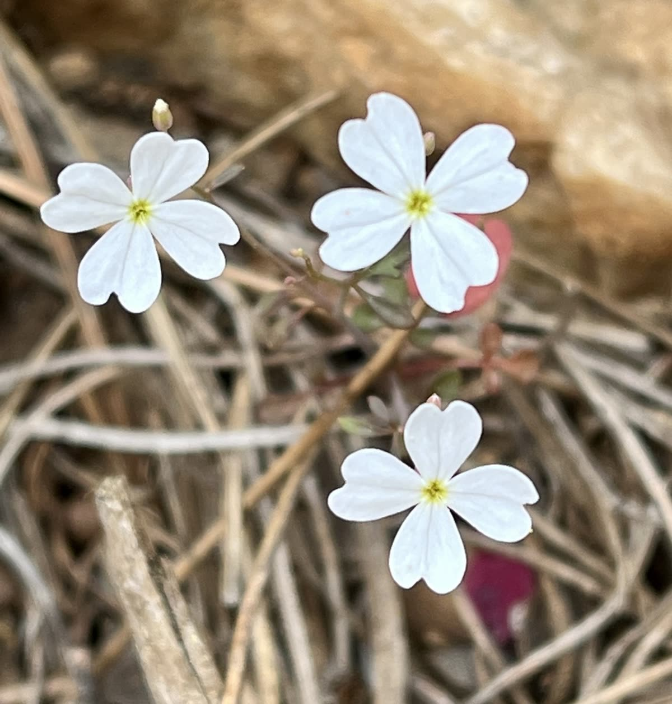

<title>Plant Biogeography</title>
<meta name="claude:viewport-fit-sides" content="cover">
<meta name="description" content="Plant Biogeography Lab, Hacettepe University: evolution, diversity and distribution of Brassicaceae across Anatolia.">
<meta name="theme-color" content="#e1f0c9">
<link rel="preconnect" href="https://fonts.googleapis.com">
<link rel="preconnect" href="https://fonts.gstatic.com" crossorigin>
<link rel="stylesheet" href="https://fonts.googleapis.com/css2?family=Archivo:wdth,wght@62..125,400..800&family=Source+Serif+4:ital,opsz,wght@0,8..60,400;0,8..60,600;1,8..60,400;1,8..60,600&family=Martian+Mono:wght@400;500&display=swap">
<style>
/* Layout: a relief map of Anatolia. The hero is a live hypsometric contour field crossed by the Anatolian Diagonal; every section below sits on one tint band of the map legend. */
:root{
  --ink:#1b2620;
  --ink-soft:#3f4f45;
  --paper:#e1f0c9;
  --stone:#d6eabb;
  --steppe:#cbe3a6;
  --steppe-ink:#3a5417;
  --foothill:#bfdc96;
  --lowland:#a9d184;
  --on-lowland:#1b2620;
  --on-lowland-soft:#3d5345;
  --rule:#a9c98a;
  --diag:#efb100;
  --diag-on-low:#5f4800;
  --leaf:#2d5638;
  --diag-ink:#6a5000;
  /* hypsometric bands, lowland to alpine */
  --b0:#6cb276; --b1:#a2cd84; --b2:#c7e09a; --b3:#e3e3a0; --b4:#eec27c; --b5:#d9955f; --b6:#e1f0c9;
  --contour:rgba(28,42,34,.2);
  --f-map:"Archivo","Arial Narrow",Arial,sans-serif;
  --f-text:"Source Serif 4",Georgia,"Times New Roman",serif;
  --f-data:"Martian Mono",ui-monospace,Menlo,Consolas,monospace;
  --step--1:.84rem; --step0:1.0625rem; --step1:1.3rem; --step2:clamp(1.55rem,3.6vw,2.1rem); --step3:clamp(2rem,5.4vw,3.2rem); --step4:clamp(2.1rem,7.4vw,4.6rem);
  --ease-out:cubic-bezier(.16,1,.3,1);
}

/* bilingual: every string exists as .en and .tr */
:root:not([data-lang="tr"]) .tr{display:none!important}
:root[data-lang="tr"] .en{display:none!important}

html{color-scheme:light}
*{box-sizing:border-box}
[hidden]{display:none!important}
html{-webkit-tap-highlight-color:transparent;-webkit-text-size-adjust:100%;scroll-behavior:smooth;scroll-padding-top:4.75rem}
@media (prefers-reduced-motion: reduce){html{scroll-behavior:auto}*{animation:none!important;transition:none!important}}
body{margin:0;background:var(--paper);color:var(--ink);font-family:var(--f-text);font-size:var(--step0);line-height:1.6;font-optical-sizing:auto}
body::before{content:"";position:fixed;inset:0 0 auto;height:env(safe-area-inset-top,0px);z-index:20;background:var(--paper)}
::selection{background:var(--diag);color:#1b1500}
:focus-visible{outline:2px solid var(--diag);outline-offset:3px}
html{scrollbar-color:var(--rule) transparent}
a{color:inherit;text-decoration-color:var(--diag);text-decoration-thickness:2px;text-underline-offset:4px}
h1,h2,h3{margin:0;font-family:var(--f-map);font-weight:700;line-height:1.05;text-wrap:balance;font-stretch:112%}
p{margin:0}
i,em{font-style:italic}
.wrap{max-width:72rem;margin:0 auto;padding-left:max(16px,env(safe-area-inset-left,0px));padding-right:max(16px,env(safe-area-inset-right,0px))}
.data{font-family:var(--f-data);font-size:.78rem;letter-spacing:.02em;font-variant-numeric:tabular-nums}
button,a.btn,[role="button"]{touch-action:manipulation}
button{-webkit-user-select:none;user-select:none;font:inherit}

/* ---------- header: the map legend ---------- */
.top{position:sticky;top:env(safe-area-inset-top,0px);z-index:15;background:color-mix(in srgb,var(--paper) 94%,transparent);-webkit-backdrop-filter:saturate(1.2) blur(10px);backdrop-filter:saturate(1.2) blur(10px);border-bottom:1px solid var(--rule)}
.top .bar{display:flex;align-items:center;gap:1rem;min-height:3.75rem}
.brand{display:flex;align-items:center;gap:.6rem;text-decoration:none;margin-right:auto;min-width:0}
.brand svg{width:30px;height:30px;flex:none}
.brand b{font-family:var(--f-map);font-weight:700;font-stretch:125%;text-transform:uppercase;letter-spacing:.08em;font-size:.82rem;line-height:1.15;white-space:nowrap}
.nav ul{list-style:none;margin:0;padding:0;display:flex;gap:.15rem}
.nav a{display:flex;align-items:center;gap:.5rem;padding:.45rem .7rem;border-radius:6px;text-decoration:none;font-family:var(--f-map);font-size:.9rem;font-weight:500;color:var(--ink-soft);white-space:nowrap;transition:background-color .16s var(--ease-out),color .16s}
.nav a .key{width:.7rem;height:.7rem;border-radius:2px;border:1px solid var(--rule);flex:none}
.nav a.on{color:var(--ink);background:var(--stone)}
.nav .sheet-mail{display:none}
.lang{display:inline-flex;border:1px solid var(--rule);border-radius:7px;overflow:hidden;flex:none}
.lang button{border:0;background:transparent;color:var(--ink-soft);font-family:var(--f-data);font-size:.74rem;font-weight:500;min-width:2.6rem;min-height:2.3rem;cursor:pointer;transition:background-color .14s,color .14s}
.lang button+button{border-left:1px solid var(--rule)}
.lang button[aria-pressed="true"]{background:var(--ink);color:var(--paper)}
.menu-btn{display:none;width:2.75rem;height:2.75rem;border:1px solid var(--rule);border-radius:7px;background:transparent;color:var(--ink);cursor:pointer;place-items:center;flex:none}
.menu-btn svg{width:20px;height:20px}
.menu-btn .x,.top.open .menu-btn .burger{display:none}
.top.open .menu-btn .x{display:block}

/* ---------- hero: the relief field ---------- */
.hero{position:relative;min-height:clamp(36rem,88svh,54rem);display:grid;align-items:center;overflow:hidden;background:var(--b3);isolation:isolate}
.hero canvas{position:absolute;inset:0;width:100%;height:100%;z-index:-1;touch-action:pan-y}
.hero>.wrap{width:100%;padding-block:3rem 5.5rem}
.cartouche{max-width:38rem;background:var(--paper);border:1px solid var(--ink);border-radius:4px;padding:clamp(1.4rem,3.5vw,2.4rem);display:grid;container-type:inline-size;gap:1.1rem;animation:settle 1.1s var(--ease-out) both .15s}
@keyframes settle{from{transform:translateY(14px)}to{transform:none}}
.cartouche h1{font-size:clamp(1.6rem,7.4vw,3.3rem);font-size:min(9.2cqi,3.6rem);font-stretch:125%;font-weight:800;text-transform:uppercase;letter-spacing:.02em;line-height:.95}
.cartouche .place{font-family:var(--f-map);font-size:.95rem;color:var(--ink-soft);display:flex;flex-wrap:wrap;gap:.2rem .75rem}
.cartouche .thesis{font-size:var(--step1);line-height:1.4;max-width:30ch}
.actions{display:flex;flex-wrap:wrap;gap:.6rem}
.btn{display:inline-flex;align-items:center;justify-content:center;gap:.55rem;white-space:nowrap;min-height:2.9rem;padding:.7rem 1.15rem;border-radius:6px;font-family:var(--f-map);font-weight:600;font-size:.98rem;text-decoration:none;border:1px solid var(--ink);cursor:pointer;transition:transform .12s var(--ease-out),background-color .16s,color .16s;-webkit-user-select:none;user-select:none}
.btn svg{width:18px;height:18px;flex:none}
.btn.solid{background:var(--ink);color:var(--paper)}
.btn.line{background:transparent;color:var(--ink)}
.btn:active{transform:scale(.97)}
.legend{position:absolute;left:0;right:0;bottom:0;background:color-mix(in srgb,var(--paper) 90%,transparent);border-top:1px solid var(--ink)}
.legend .wrap{padding-block:.6rem;display:flex;flex-wrap:wrap;align-items:center;gap:.5rem 1.4rem;color:var(--ink-soft)}
.legend .ramp{display:flex;align-items:center;gap:.5rem}
.legend .ramp span.sw{display:flex;height:.7rem;width:7.5rem;border:1px solid var(--ink);border-radius:1px;overflow:hidden}
.legend .ramp span.sw i{flex:1}
.legend .dline{display:flex;align-items:center;gap:.5rem}
.legend .dline::before{content:"";width:1.8rem;border-top:3px dashed var(--diag)}
.legend .note{margin-left:auto}

/* ---------- sections on tint bands ---------- */
section.band>.wrap{padding-block:clamp(3.5rem,8vw,6.5rem);display:grid;gap:clamp(1.75rem,4vw,2.75rem)}
.band-stone{background:var(--stone)}
.band-paper{background:var(--paper)}
.band-steppe{background:var(--steppe)}
.band-foothill{background:var(--foothill)}
.band-lowland{background:var(--lowland);color:var(--on-lowland)}
.sec-title{font-size:clamp(1.8rem,4.8vw,2.9rem);max-width:22ch;font-stretch:125%;letter-spacing:.012em}
.lede{font-size:var(--step1);line-height:1.45;max-width:40ch}
.prose{display:grid;gap:1rem;max-width:66ch;color:var(--ink-soft)}
.prose strong{color:var(--ink);font-weight:600}

/* about */
.about{display:grid;grid-template-columns:minmax(0,1.3fr) minmax(0,1fr);gap:clamp(2rem,6vw,5rem);align-items:start}
.methods{list-style:none;margin:0;padding:0;border-top:1px solid var(--ink)}
.photo{margin:0;position:relative;border:1px solid var(--ink);border-radius:4px;overflow:hidden;aspect-ratio:4/5;max-width:100%;background:var(--b2)}
.photo img{display:block;width:100%;height:100%;object-fit:cover}
.specimen-tag{position:absolute;left:.75rem;bottom:.75rem;background:var(--paper);color:var(--ink);font-family:var(--f-text);font-size:1rem;padding:.25rem .65rem;border:1px solid var(--ink);border-radius:2px}
.methods{display:grid;grid-template-columns:repeat(4,minmax(0,1fr));column-gap:clamp(1rem,3vw,2rem)}

.methods li{display:grid;grid-template-columns:2.4rem minmax(0,1fr);gap:.9rem;padding:1rem 0;border-bottom:1px solid var(--rule)}
.methods svg{width:2.4rem;height:2.4rem;color:var(--ink)}
.methods h3{font-size:1.05rem;font-stretch:100%;margin-bottom:.2rem}
.methods p{font-size:.95rem;color:var(--ink-soft);line-height:1.5}
.hotspots{display:flex;flex-wrap:wrap;gap:.5rem}
.hotspots span{font-family:var(--f-map);font-size:.88rem;padding:.3rem .65rem;border:1px solid var(--ink);border-radius:999px}

/* research: annotations on the map */
.filters{display:flex;gap:.45rem;flex-wrap:wrap}
.chip{display:inline-flex;align-items:center;gap:.45rem;min-height:2.5rem;padding:.4rem .9rem;border-radius:999px;border:1px solid var(--steppe-ink);background:transparent;color:var(--steppe-ink);font-family:var(--f-map);font-size:.9rem;font-weight:500;cursor:pointer;white-space:nowrap;transition:background-color .16s,color .16s,transform .12s var(--ease-out)}
.chip:active{transform:scale(.97)}
.chip[aria-pressed="true"]{background:var(--ink);border-color:var(--ink);color:var(--paper)}
.studies{display:grid;grid-template-columns:repeat(2,minmax(0,1fr));column-gap:clamp(1.5rem,5vw,4rem);border-top:1px solid var(--ink)}
.study{display:grid;gap:.6rem;padding:1.6rem 0;border-bottom:1px solid color-mix(in srgb,var(--steppe-ink) 35%,transparent);align-content:start}
.study .taxon{font-family:var(--f-text);font-style:italic;font-weight:600;font-size:var(--step2);line-height:1.1;font-stretch:normal}
.study .taxon .plain{font-style:normal}
.study .meta{display:flex;flex-wrap:wrap;align-items:center;gap:.3rem .5rem;color:var(--steppe-ink)}
.study .meta svg{width:14px;height:14px;flex:none;margin-right:-.15rem}
.study .meta .sep{display:none}
.study .meta .src{flex-basis:100%;opacity:.85}
.study p.desc{color:var(--ink-soft);max-width:52ch}

/* publications */
.pubs{list-style:none;margin:0;padding:0;border-top:1px solid var(--ink)}
.pubs li{display:grid;grid-template-columns:5.5rem minmax(0,1fr);gap:1.25rem;padding:1.25rem 0;border-bottom:1px solid var(--rule)}
.pubs .yr{font-family:var(--f-data);font-size:.95rem;color:var(--ink);padding-top:.15rem}
.pubs .t{font-size:1.08rem;font-weight:600;line-height:1.35;max-width:70ch}
.pubs .a{color:var(--ink-soft);font-size:.95rem;margin-top:.3rem}
.pubs .j{color:var(--ink-soft);font-size:.95rem}
.pubs a{overflow-wrap:anywhere}
.profiles{display:flex;flex-wrap:wrap;gap:.6rem}

/* projects */
.projects{display:grid;grid-template-columns:minmax(0,1.5fr) minmax(0,1fr);grid-template-rows:auto auto;gap:0 clamp(1.5rem,5vw,4rem);border-top:1px solid var(--ink)}
.project{display:grid;gap:.7rem;align-content:start;padding:1.6rem 0;border-bottom:1px solid color-mix(in srgb,var(--steppe-ink) 35%,transparent)}
.project:first-child{grid-row:span 2}
.project h3{font-size:clamp(1.25rem,2.4vw,1.6rem);font-stretch:112%;line-height:1.15}
.project:first-child h3{font-size:clamp(1.4rem,3vw,2rem)}
.project .desc{color:var(--ink-soft);max-width:62ch}
.project .facts{display:grid;grid-template-columns:repeat(4,minmax(0,1fr));gap:1px;margin:.4rem 0 0;border:1px solid var(--steppe-ink);border-radius:4px;overflow:hidden;background:var(--steppe-ink)}
.project .facts div{background:var(--steppe);padding:.6rem .75rem;display:grid;gap:.15rem}
.project .facts dt{color:var(--steppe-ink);font-size:.7rem}
.project .facts dd{margin:0;font-size:1rem;color:var(--ink);font-weight:500}
.sub-title{font-size:1.15rem;font-stretch:112%;letter-spacing:.01em;margin-top:.5rem}
.media{color:var(--ink-soft)}
.more-btn{justify-self:start}
.pubs b{font-weight:600;color:var(--ink)}
/* people */
.pi{display:grid;grid-template-columns:minmax(0,15rem) minmax(0,1fr);gap:clamp(1.25rem,5vw,3.5rem);align-items:end}
.tile{position:relative;aspect-ratio:4/5;max-width:100%;border:1px solid var(--ink);border-radius:3px;overflow:hidden;background:var(--b2)}
.tile canvas{position:absolute;inset:0;width:100%;height:100%}
.tile .mono{position:absolute;left:.6rem;bottom:.55rem;background:var(--paper);color:var(--ink);font-family:var(--f-map);font-stretch:125%;font-weight:700;font-size:1.05rem;letter-spacing:.06em;padding:.15rem .5rem;border:1px solid var(--ink);border-radius:2px}
.role{font-family:var(--f-map);font-size:.88rem;font-weight:600;color:var(--leaf)}
.pi h3{font-size:var(--step2);margin-bottom:.3rem}
.pi .role{margin-bottom:.75rem}
.member .role{margin-top:.2rem}
.pi .aff{color:var(--ink-soft);max-width:52ch}
.team{display:grid;grid-template-columns:repeat(5,minmax(0,1fr));gap:clamp(.9rem,2.4vw,1.5rem)}
.member{display:grid;gap:.65rem;align-content:start}
.member h3{font-size:1.05rem;font-stretch:100%;line-height:1.2}
.member .note{font-size:.88rem;color:var(--ink-soft);line-height:1.4}
.edu{list-style:none;margin:.9rem 0 0;padding:.75rem 0 0;border-top:1px solid color-mix(in srgb,var(--ink) 25%,transparent);display:grid;gap:.3rem;color:var(--ink-soft)}
.groups{display:grid;grid-template-columns:minmax(0,1fr) minmax(0,2fr);gap:clamp(1.5rem,5vw,4rem);align-items:start}
.roster{list-style:none;margin:.75rem 0 0;padding:0;border-top:1px solid var(--ink)}
.roster li{display:grid;gap:.1rem;padding:.75rem 0;border-bottom:1px solid color-mix(in srgb,var(--ink) 18%,transparent)}
.roster b{font-family:var(--f-map);font-weight:600;font-size:1rem}
.roster .note{font-size:.9rem;color:var(--ink-soft);line-height:1.4}
.roster.collab{display:grid;grid-template-columns:repeat(2,minmax(0,1fr));column-gap:2rem}
.join{display:flex;flex-wrap:wrap;align-items:center;justify-content:space-between;gap:1rem;padding:1.25rem 1.4rem;border:1px solid var(--ink);border-radius:4px;background:var(--paper)}
.join p{max-width:52ch}

/* contact: the lowland */
.contact{display:grid;grid-template-columns:minmax(0,1.1fr) minmax(0,1fr);gap:clamp(2rem,6vw,5rem);align-items:start}
.band-lowland .sec-title{color:var(--on-lowland)}
.band-lowland .lede{color:var(--on-lowland-soft)}
.mail{display:grid;gap:.9rem}
.mail .addr{font-family:var(--f-data);font-size:clamp(1rem,3.6vw,1.35rem);color:var(--on-lowland);overflow-wrap:anywhere;-webkit-user-select:all;user-select:all}
.band-lowland .btn.solid{background:var(--diag);border-color:var(--diag);color:#1b1500}
.band-lowland .btn.line{border-color:var(--on-lowland-soft);color:var(--on-lowland)}
.visit{display:grid;gap:1.1rem;border-top:1px solid var(--on-lowland-soft);padding-top:1.1rem}
.visit .k{font-family:var(--f-map);font-size:.85rem;font-weight:600;color:var(--on-lowland-soft);margin-bottom:.15rem}
.visit p{color:var(--on-lowland)}
.visit .data{color:var(--diag-on-low)}
.toast{font-family:var(--f-map);font-size:.9rem;color:var(--diag-on-low);min-height:1.4em}

footer{background:#93c572;color:var(--ink);border-top:1px solid var(--rule)}
footer .wrap{padding-block:1.6rem;display:flex;flex-wrap:wrap;justify-content:space-between;gap:.75rem 1.5rem;font-family:var(--f-map);font-size:.88rem;padding-bottom:calc(1.6rem + env(safe-area-inset-bottom,0px))}
footer .data{opacity:.8}

/* hover only where a precise pointer exists */
@media (hover:hover) and (pointer:fine){
  .nav a:hover{background:var(--stone);color:var(--ink)}
  .lang button:hover:not([aria-pressed="true"]){background:var(--stone);color:var(--ink)}
  .btn.solid:hover{background:color-mix(in srgb,var(--ink) 86%,var(--b0))}
  .btn.line:hover{background:color-mix(in srgb,var(--ink) 8%,transparent)}
  .chip:hover:not([aria-pressed="true"]){background:color-mix(in srgb,var(--steppe-ink) 12%,transparent)}
  .band-lowland .btn.solid:hover{background:#ffc928}
  .band-lowland .btn.line:hover{background:rgba(27,38,32,.06)}
  .pubs a:hover,.member a:hover{text-decoration-thickness:3px}
}

/* ---------- tablet ---------- */
@media (max-width:980px){
  .team{grid-template-columns:repeat(3,minmax(0,1fr))}
  .projects,.groups{grid-template-columns:minmax(0,1fr)}
  .methods{grid-template-columns:repeat(2,minmax(0,1fr))}
  .about .photo{max-width:28rem;aspect-ratio:1/1}
  .project:first-child{grid-row:auto}
  .about,.contact{grid-template-columns:minmax(0,1fr)}
}
/* ---------- phone: legend becomes a sheet ---------- */
@media (max-width:860px){
  .menu-btn{display:grid}
  .top .bar{flex-wrap:wrap;gap:.5rem}
  .nav{display:none;order:3;width:100%;padding:.25rem 0 1rem;max-height:calc(100dvh - 4.5rem - env(safe-area-inset-top,0px));overflow-y:auto;overscroll-behavior:contain}
  .top.open .nav{display:block;animation:sheet .26s var(--ease-out)}
  @keyframes sheet{from{transform:translateY(-6px);opacity:.4}to{transform:none;opacity:1}}
  .nav ul{flex-direction:column;gap:0;border-top:1px solid var(--rule)}
  .nav a{font-size:1.1rem;padding:.95rem .5rem;border-radius:0;border-bottom:1px solid var(--rule)}
  .nav a .key{width:1rem;height:1rem}
  .nav .sheet-mail{display:flex;margin-top:1rem}
  .nav .sheet-mail .btn{width:100%}
}
@media (max-width:760px){
  .hero{align-items:end;min-height:clamp(38rem,92svh,46rem)}
  .hero>.wrap{padding-block:10rem 7.25rem}
  .cartouche{max-width:none}
  .cartouche .thesis{font-size:1.15rem}
  .actions .btn{flex:1 1 9rem}
  .legend .note{margin-left:0}
  .studies{grid-template-columns:minmax(0,1fr)}
  .filters{flex-wrap:nowrap;overflow-x:auto;scrollbar-width:none;margin-inline:calc(-1 * max(16px,env(safe-area-inset-left,0px)));padding-inline:max(16px,env(safe-area-inset-left,0px));scroll-padding-inline:max(16px,env(safe-area-inset-left,0px));scroll-snap-type:x proximity}
  .filters::-webkit-scrollbar{display:none}
  .chip{scroll-snap-align:start}
  .pi{grid-template-columns:minmax(0,9rem) minmax(0,1fr);align-items:center}
  .pi h3{font-size:1.4rem}
  .team{grid-template-columns:repeat(2,minmax(0,1fr))}
  .pubs li{grid-template-columns:minmax(0,1fr);gap:.3rem}
  .project .facts{grid-template-columns:repeat(2,minmax(0,1fr))}
  .roster.collab{grid-template-columns:minmax(0,1fr)}
  .methods{grid-template-columns:minmax(0,1fr)}
  .more-btn{width:100%}
  .join .btn{width:100%}
  .mail .actions .btn{flex:1 1 100%}
}
@media (max-width:420px){
  .brand b{font-size:.72rem;letter-spacing:.06em}
  .brand svg{width:26px;height:26px}
  .lang button{min-width:2.4rem}
  .pi{grid-template-columns:minmax(0,1fr)}
  .pi .tile{max-width:10rem}
}
</style>

<header class="top" id="hdr">
  <div class="wrap">
    <div class="bar">
      <a class="brand" href="#top" aria-label="Plant Biogeography">
        <svg viewBox="0 0 32 32" fill="none" aria-hidden="true">
          <path d="M3 22c3-9 9-17 16-16 7 1 10 8 8 14-2 7-12 9-18 7-3-1-6-2-6-5z" stroke="currentColor" stroke-width="1.6"/>
          <path d="M9 21c2-6 6-11 11-10 4 1 5 5 4 8-1 4-7 6-11 5-2 0-4-1-4-3z" stroke="currentColor" stroke-width="1.6"/>
          <path d="M14 19c1-3 3-5 5-4 2 0 2 2 2 3-1 2-3 3-5 3-1 0-2-1-2-2z" fill="var(--diag)" stroke="currentColor" stroke-width="1.4"/>
          <path d="M28 3 4 29" stroke="var(--diag)" stroke-width="2" stroke-dasharray="3 2.5"/>
        </svg>
        <b>Plant<br>Biogeography</b>
      </a>
      <nav class="nav" id="nav" aria-label="Sections">
        <ul>
          <li><a href="#about"><span class="key" style="background:var(--b6)"></span><span class="en">About</span><span class="tr">Hakkımızda</span></a></li>
          <li><a href="#research"><span class="key" style="background:var(--b4)"></span><span class="en">Research</span><span class="tr">Araştırma</span></a></li>
          <li><a href="#publications"><span class="key" style="background:var(--b3)"></span><span class="en">Publications</span><span class="tr">Yayınlar</span></a></li>
          <li><a href="#people"><span class="key" style="background:var(--b2)"></span><span class="en">People</span><span class="tr">Ekip</span></a></li>
          <li><a href="#contact"><span class="key" style="background:var(--b0)"></span><span class="en">Contact</span><span class="tr">İletişim</span></a></li>
        </ul>
        <div class="sheet-mail"><a class="btn solid" href="mailto:barisoz@hacettepe.edu.tr"><svg viewBox="0 0 24 24" fill="none" stroke="currentColor" stroke-width="1.8" aria-hidden="true"><rect x="3" y="5" width="18" height="14" rx="1.5"/><path d="m4 6 8 7 8-7"/></svg><span class="en">E-mail the lab</span><span class="tr">Laboratuvara e-posta gönder</span></a></div>
      </nav>
      <div class="lang" role="group" aria-label="Language / Dil">
        <button type="button" id="lang-tr" data-lang="tr" aria-pressed="false" lang="tr">TR</button>
        <button type="button" id="lang-en" data-lang="en" aria-pressed="true" lang="en">EN</button>
      </div>
      <button type="button" class="menu-btn" id="menu-btn" aria-expanded="false" aria-controls="nav">
        <span class="en" style="position:absolute;width:1px;height:1px;overflow:hidden;clip:rect(0 0 0 0)">Menu</span><span class="tr" style="position:absolute;width:1px;height:1px;overflow:hidden;clip:rect(0 0 0 0)">Menü</span>
        <svg class="burger" viewBox="0 0 24 24" fill="none" stroke="currentColor" stroke-width="2" stroke-linecap="round" aria-hidden="true"><path d="M4 7h16M4 12h16M4 17h10"/></svg>
        <svg class="x" viewBox="0 0 24 24" fill="none" stroke="currentColor" stroke-width="2" stroke-linecap="round" aria-hidden="true"><path d="M6 6l12 12M18 6 6 18"/></svg>
      </button>
    </div>
  </div>
</header>

<main>
  <section class="hero" id="top" aria-labelledby="h1">
    <canvas id="relief" aria-hidden="true"></canvas>
    <div class="wrap">
      <div class="cartouche">
        <h1 id="h1">Plant<br>Biogeography</h1>
        <p class="place"><span class="en">Laboratory · Hacettepe University, Ankara</span><span class="tr">Laboratuvarı · Hacettepe Üniversitesi, Ankara</span></p>
        <p class="thesis"><span class="en">We study how the mustard family, <i>Brassicaceae</i>, came to live where it lives across the mountains and steppes of Anatolia.</span><span class="tr">Turpgiller familyasının, <i>Brassicaceae</i>'nin, Anadolu'nun dağlarına ve bozkırlarına nasıl yayıldığını araştırıyoruz.</span></p>
        <div class="actions">
          <a class="btn solid" href="#research"><span class="en">See our research</span><span class="tr">Araştırmalarımız</span><svg viewBox="0 0 24 24" fill="none" stroke="currentColor" stroke-width="1.8" aria-hidden="true"><path d="M12 5v14m0 0 6-6m-6 6-6-6"/></svg></a>
          <a class="btn line" href="#contact"><span class="en">Contact</span><span class="tr">İletişim</span></a>
        </div>
      </div>
    </div>
    <div class="legend" aria-hidden="true">
      <div class="wrap data">
        <span class="ramp"><span class="en">Lowland</span><span class="tr">Ova</span><span class="sw"><i style="background:var(--b0)"></i><i style="background:var(--b1)"></i><i style="background:var(--b2)"></i><i style="background:var(--b3)"></i><i style="background:var(--b4)"></i><i style="background:var(--b5)"></i><i style="background:var(--b6)"></i></span><span class="en">Alpine</span><span class="tr">Alpin</span></span>
        <span class="dline"><span class="en">Anatolian Diagonal</span><span class="tr">Anadolu Diyagonali</span></span>
        <span class="note"><span class="en">Schematic relief</span><span class="tr">Şematik rölyef</span><span class="loc"><span class="en"> · lab at <span style="white-space:nowrap">39.87° N 32.73° E</span></span><span class="tr"> · lab <span style="white-space:nowrap">39,87° K 32,73° D</span></span></span></span>
      </div>
    </div>
  </section>

  <!-- ABOUT -->
  <section class="band band-stone" id="about" aria-labelledby="about-h">
    <div class="wrap">
      <h2 class="sec-title" id="about-h"><span class="en">Reading history from where plants grow</span><span class="tr">Bitkilerin yetiştiği yerden geçmişi okumak</span></h2>
      <div class="about">
        <div class="prose">
          <p class="lede" style="color:var(--ink)"><span class="en">Anatolia sits where three biodiversity hotspots meet. Its crucifer flora is rich, old and full of endemics, and its mountains keep a record of how that flora formed.</span><span class="tr">Anadolu, üç biyoçeşitlilik sıcak noktasının buluştuğu yerdedir. Turpgil florası zengin, eski ve endemiklerle doludur; dağları bu floranın nasıl oluştuğunun kaydını saklar.</span></p>
          <p class="en">The <strong>Plant Biogeography Lab</strong> in the Department of Biology at Hacettepe University asks how plant lineages came to occupy the places they occupy today. Our study group is <strong>Brassicaceae</strong>, the mustard family, from Eastern Mediterranean annuals such as <i>Ricotia</i> to cushion plants of the alpine steppe such as <i>Noccaea iberidea</i>.</p>
          <p class="tr">Hacettepe Üniversitesi Biyoloji Bölümü'ndeki <strong>Bitki Biyocoğrafyası Laboratuvarı</strong>, bitki soy hatlarının bugün bulundukları yerlere nasıl ulaştığını araştırır. Çalışma grubumuz turpgiller, yani <strong>Brassicaceae</strong>: <i>Ricotia</i> gibi Doğu Akdeniz bir yıllıklarından <i>Noccaea iberidea</i> gibi alpin bozkır yastık bitkilerine kadar.</p>
          <p class="en">We work with colleagues in Türkiye, Germany and the United States, and train students in field botany, plant systematics and computational biogeography.</p>
          <p class="tr">Türkiye, Almanya ve ABD'deki araştırmacılarla birlikte çalışıyor; öğrencilerimizi arazi botaniği, bitki sistematiği ve hesaplamalı biyocoğrafya alanlarında yetiştiriyoruz.</p>
          <div class="hotspots" aria-label="Hotspots">
            <span class="en">Mediterranean</span><span class="tr">Akdeniz</span>
            <span class="en">Caucasus</span><span class="tr">Kafkasya</span>
            <span class="en">Irano-Anatolian</span><span class="tr">İran-Anadolu</span>
          </div>
        </div>
        <figure class="photo">
          
          <figcaption class="specimen-tag"><i>Ricotia carnosula</i></figcaption>
        </figure>
      </div>
      <ul class="methods">
          <li>
            <svg viewBox="0 0 40 40" fill="none" stroke="currentColor" stroke-width="1.6" aria-hidden="true"><path d="M20 36V20M20 20 9 7M20 20l11-13M20 27l-7-6M20 29l7-6"/><circle cx="9" cy="7" r="2" fill="var(--diag)"/><circle cx="31" cy="7" r="2" fill="var(--diag)"/></svg>
            <div><h3><span class="en">Phylogeny and dating</span><span class="tr">Filogeni ve tarihlendirme</span></h3><p><span class="en">Nuclear and chloroplast markers, time-calibrated trees.</span><span class="tr">Çekirdek ve kloroplast belirteçleri, zaman kalibrasyonlu ağaçlar.</span></p></div>
          </li>
          <li>
            <svg viewBox="0 0 40 40" fill="none" stroke="currentColor" stroke-width="1.6" aria-hidden="true"><path d="M5 30c5-10 11-18 17-17s10 8 8 13-11 7-17 6c-4 0-8-1-8-2z"/><path d="M12 28c2-6 6-10 10-9s5 4 4 7-6 4-9 3"/><path d="M34 4 8 36" stroke="var(--diag)" stroke-width="2" stroke-dasharray="3 3"/></svg>
            <div><h3><span class="en">Historical biogeography</span><span class="tr">Tarihsel biyocoğrafya</span></h3><p><span class="en">Ancestral ranges between Anatolia, the Balkans and the Eastern Mediterranean.</span><span class="tr">Anadolu, Balkanlar ve Doğu Akdeniz arasında atasal yayılış alanları.</span></p></div>
          </li>
          <li>
            <svg viewBox="0 0 40 40" fill="none" stroke="currentColor" stroke-width="1.6" aria-hidden="true"><rect x="5" y="7" width="30" height="26" rx="1"/><path d="M5 25c6-3 9 2 15-2s9-1 15-4"/><circle cx="15" cy="16" r="2.2" fill="var(--diag)"/><circle cx="26" cy="14" r="2.2" fill="var(--diag)"/></svg>
            <div><h3><span class="en">Niche modelling</span><span class="tr">Niş modelleme</span></h3><p><span class="en">Quaternary range shifts from climate layers and occurrences.</span><span class="tr">İklim katmanları ve kayıtlarla Kuvaterner yayılış değişimleri.</span></p></div>
          </li>
          <li>
            <svg viewBox="0 0 40 40" fill="none" stroke="currentColor" stroke-width="1.6" aria-hidden="true"><rect x="8" y="4" width="24" height="32" rx="1"/><path d="M20 30V14m0 6-5-4m5 1 5-4"/><path d="M13 33h14"/></svg>
            <div><h3><span class="en">Herbarium records</span><span class="tr">Herbaryum kayıtları</span></h3><p><span class="en">Over 15,000 georeferenced records analysed for Türkiye.</span><span class="tr">Türkiye için 15.000'den fazla koordinatlı kayıt analiz edildi.</span></p></div>
          </li>
        </ul>
    </div>
  </section>

  <!-- RESEARCH -->
  <section class="band band-steppe" id="research" aria-labelledby="research-h">
    <div class="wrap">
      <h2 class="sec-title" id="research-h"><span class="en">Research</span><span class="tr">Araştırma</span></h2>
      <div class="projects">
        <article class="project">
          <h3><span class="en">How Anatolian high-mountain plants responded to Quaternary climate change</span><span class="tr">Anadolu yüksek dağ bitkilerinin Kuvaterner iklim değişimlerine tepkisi</span></h3>
          <p class="desc"><span class="en">Alpine crucifers whose ranges follow the Anatolian Diagonal and the Taurus Mountains, <i>Heldreichia bupleurifolia</i> (all six infraspecific taxa), <i>Noccaea oppositifolia</i> and <i>Phyllolepidium cyclocarpum</i> subsp. <i>cyclocarpum</i>, are studied with RADseq genomic data and ecological niche modelling. The project tests whether the glacial expansion–contraction model built for Europe and North America fits a landscape as complex as Anatolia, maps genomic hotspots (refugia), and uses <i>Arabidopsis thaliana</i> as the reference genome to look for genes behind adaptation to altitude, temperature and precipitation.</span><span class="tr">Yayılışı Anadolu Diyagonali ve Toros Dağları ile örtüşen alpin turpgiller, <i>Heldreichia bupleurifolia</i> (altı alttürün tamamı), <i>Noccaea oppositifolia</i> ve <i>Phyllolepidium cyclocarpum</i> subsp. <i>cyclocarpum</i>, RADseq genomik verisi ve ekolojik niş modellemesiyle çalışılıyor. Proje, Avrupa ve Kuzey Amerika için kurulan buzul dönemi genişleme–daralma modelinin Anadolu gibi karmaşık bir coğrafyaya uyup uymadığını test ediyor, genomik sıcak noktaları (refugia) belirliyor ve <i>Arabidopsis thaliana</i>'yı referans genom olarak kullanarak yükselti, sıcaklık ve yağışa uyumda rol oynayan genleri arıyor.</span></p>
          <dl class="facts data">
            <div><dt><span class="en">Taxa</span><span class="tr">Takson</span></dt><dd>8</dd></div>
            <div><dt><span class="en">Populations</span><span class="tr">Popülasyon</span></dt><dd>60–70</dd></div>
            <div><dt><span class="en">Individuals</span><span class="tr">Birey</span></dt><dd>~700</dd></div>
            <div><dt><span class="en">Methods</span><span class="tr">Yöntem</span></dt><dd>RADseq · ENM</dd></div>
          </dl>
        </article>
        <article class="project">
          <h3><span class="en">Phylogeny of <i>Noccaea</i> from genomic data</span><span class="tr">Genomik veriyle <i>Noccaea</i> filogenisi</span></h3>
          <p class="desc"><span class="en"><i>Noccaea</i> Moench is one of the most problematic crucifer genera: common loci such as ITS and trnL-F carry too little variation to resolve its species complexes. We use RADseq data to resolve them and to model trait evolution, such as annual versus perennial life form and horned versus hornless fruits.</span><span class="tr"><i>Noccaea</i> Moench, turpgillerin en sorunlu cinslerinden biridir: ITS ve trnL-F gibi yaygın bölgeler tür komplekslerini çözmeye yetecek kadar değişkenlik taşımaz. Bu kompleksleri RADseq verisiyle çözüyor; bir yıllık–çok yıllık yaşam formu ve meyvede boynuz varlığı gibi karakterlerin evrimini modelliyoruz.</span></p>
        </article>
        <article class="project">
          <h3><span class="en">Phylogeography of <i>Noccaea iberidea</i></span><span class="tr"><i>Noccaea iberidea</i> filocoğrafyası</span></h3>
          <p class="desc"><span class="en">A high-alpine model species for testing how plants responded to Pleistocene climate change, combining molecular data with ecological niche models.</span><span class="tr">Bitkilerin Pleistosen iklim değişimine nasıl tepki verdiğini test etmek için model alınan yüksek alpin bir tür; moleküler veri ekolojik niş modelleriyle birleştiriliyor.</span></p>
        </article>
      </div>
      <h3 class="sub-title"><span class="en">Published study groups</span><span class="tr">Yayımlanmış çalışma grupları</span></h3>
      <div class="filters" role="group" aria-label="Filter">
        <button class="chip" type="button" id="f-all" data-f="all" aria-pressed="true"><span class="en">All</span><span class="tr">Tümü</span></button>
        <button class="chip" type="button" id="f-phy" data-f="phy" aria-pressed="false"><span class="en">Phylogeny &amp; biogeography</span><span class="tr">Filogeni ve biyocoğrafya</span></button>
        <button class="chip" type="button" id="f-eco" data-f="eco" aria-pressed="false"><span class="en">Diversity &amp; ecology</span><span class="tr">Çeşitlilik ve ekoloji</span></button>
      </div>
      <div class="studies" id="studies">
        <article class="study" data-s="eco">
          <h3 class="taxon"><span class="plain">Brassicaceae</span> <span class="en plain">richness</span><span class="tr plain">zenginliği</span></h3>
          <p class="desc"><span class="en">From more than 15,000 georeferenced herbarium records: topographically complex, climatically stable mountains of southern Anatolia and the Anatolian Diagonal hold the most species and endemics.</span><span class="tr">15.000'den fazla koordinatlı herbaryum kaydına göre en çok tür ve endemik, güney Anadolu'nun ve Anadolu Diyagonali'nin topoğrafik olarak karmaşık, iklimsel olarak kararlı dağlarında.</span></p>
          <p class="meta data"><svg viewBox="0 0 16 16" fill="none" stroke="currentColor" stroke-width="1.5" aria-hidden="true"><path d="M8 15s-5-4.6-5-8a5 5 0 0 1 10 0c0 3.4-5 8-5 8z"/><circle cx="8" cy="7" r="1.6"/></svg><span class="en">Türkiye · Anatolian Diagonal</span><span class="tr">Türkiye · Anadolu Diyagonali</span><span class="sep">·</span><span class="src">Ecology and Evolution · 2026</span></p>
        </article>
        <article class="study" data-s="phy">
          <h3 class="taxon">Ricotia</h3>
          <p class="desc"><span class="en">The genus originated in Anatolia. Its diversification follows the onset of the Mediterranean climate and was driven by local environments and ecological specialisation.</span><span class="tr">Cins Anadolu kökenlidir. Çeşitlenmesi Akdeniz ikliminin başlangıcını izler; yerel çevre koşulları ve ekolojik özelleşme bu süreci yönlendirmiştir.</span></p>
          <p class="meta data"><svg viewBox="0 0 16 16" fill="none" stroke="currentColor" stroke-width="1.5" aria-hidden="true"><path d="M8 15s-5-4.6-5-8a5 5 0 0 1 10 0c0 3.4-5 8-5 8z"/><circle cx="8" cy="7" r="1.6"/></svg><span class="en">Eastern Mediterranean</span><span class="tr">Doğu Akdeniz</span><span class="sep">·</span><span class="src">Taxon · 2015 &nbsp;·&nbsp; J. Syst. Evol. · 2022</span></p>
        </article>
        <article class="study" data-s="phy">
          <h3 class="taxon">Bornmuellera</h3>
          <p class="desc"><span class="en">Nuclear and chloroplast data confirm an Anatolian origin, with clades splitting between Anatolia and the Balkans at the Plio-Pleistocene transition.</span><span class="tr">Çekirdek ve kloroplast verileri Anadolu kökenini doğruluyor; dallar Pliyo-Pleistosen geçişinde Anadolu ile Balkanlar arasında ayrılıyor.</span></p>
          <p class="meta data"><svg viewBox="0 0 16 16" fill="none" stroke="currentColor" stroke-width="1.5" aria-hidden="true"><path d="M8 15s-5-4.6-5-8a5 5 0 0 1 10 0c0 3.4-5 8-5 8z"/><circle cx="8" cy="7" r="1.6"/></svg><span class="en">Anatolia ↔ Balkans</span><span class="tr">Anadolu ↔ Balkanlar</span><span class="sep">·</span><span class="src">Turk. J. Bot. · 2020</span></p>
        </article>
        <article class="study" data-s="phy">
          <h3 class="taxon">Noccaea iberidea</h3>
          <p class="desc"><span class="en">Niche models and phylogeography trace how a typical plant of Anatolia's high steppe moved through the Quaternary, and show a recent population expansion.</span><span class="tr">Niş modelleri ve filocoğrafya, Anadolu yüksek bozkırlarının tipik bir bitkisinin Kuvaterner boyunca nasıl yer değiştirdiğini izliyor ve yakın zamanlı bir popülasyon genişlemesi gösteriyor.</span></p>
          <p class="meta data"><svg viewBox="0 0 16 16" fill="none" stroke="currentColor" stroke-width="1.5" aria-hidden="true"><path d="M8 15s-5-4.6-5-8a5 5 0 0 1 10 0c0 3.4-5 8-5 8z"/><circle cx="8" cy="7" r="1.6"/></svg><span class="en">Subalpine–alpine steppe</span><span class="tr">Subalpin–alpin bozkır</span><span class="sep">·</span><span class="src">Biol. J. Linn. Soc. · 2020</span></p>
        </article>
        <article class="study" data-s="phy">
          <h3 class="taxon">Iberis simplex <span class="en plain">complex</span><span class="tr plain">kompleksi</span></h3>
          <p class="desc"><span class="en">Systematics and biogeography of a species complex that spans two floristic regions.</span><span class="tr">İki floristik bölgeye yayılan bir tür kompleksinin sistematiği ve biyocoğrafyası.</span></p>
          <p class="meta data"><svg viewBox="0 0 16 16" fill="none" stroke="currentColor" stroke-width="1.5" aria-hidden="true"><path d="M8 15s-5-4.6-5-8a5 5 0 0 1 10 0c0 3.4-5 8-5 8z"/><circle cx="8" cy="7" r="1.6"/></svg><span class="en">Mediterranean · Irano-Anatolian</span><span class="tr">Akdeniz · İran-Anadolu</span><span class="sep">·</span><span class="src"><span class="en">Ongoing</span><span class="tr">Sürüyor</span></span></p>
        </article>
        <article class="study" data-s="eco">
          <h3 class="taxon"><span class="en plain">Fire and germination</span><span class="tr plain">Yangın ve çimlenme</span></h3>
          <p class="desc"><span class="en">Fire-related germination and early seedling growth in 21 herbaceous steppe species.</span><span class="tr">21 otsu bozkır türünde yangınla ilişkili çimlenme ve erken fide gelişimi.</span></p>
          <p class="meta data"><svg viewBox="0 0 16 16" fill="none" stroke="currentColor" stroke-width="1.5" aria-hidden="true"><path d="M8 15s-5-4.6-5-8a5 5 0 0 1 10 0c0 3.4-5 8-5 8z"/><circle cx="8" cy="7" r="1.6"/></svg><span class="en">Central Anatolian steppe</span><span class="tr">İç Anadolu bozkırı</span><span class="sep">·</span><span class="src">J. Arid Environ. · 2015</span></p>
        </article>
      </div>
    </div>
  </section>

  <!-- PUBLICATIONS -->
  <section class="band band-paper" id="publications" aria-labelledby="pubs-h">
    <div class="wrap">
      <h2 class="sec-title" id="pubs-h"><span class="en">Publications</span><span class="tr">Yayınlar</span></h2>
      <ol class="pubs" id="pubs">
        <li><span class="yr">2026</span><div>
          <p class="t">A plant diversity dark spot at the intersection of three biodiversity hotspots: environmental drivers of Brassicaceae richness in Türkiye</p>
          <p class="a">Dumlupınar İ., Gür H., <b>Özüdoğru B.</b></p>
          <p class="j"><i>Ecology and Evolution</i></p></div></li>
        <li><span class="yr">2025</span><div>
          <p class="t">Polygenic discrimination of leaf morphotypes in alpine <i>Heldreichia bupleurifolia</i> (Brassicaceae) across its natural range</p>
          <p class="a">Yılmaz E., Can I.D., Özgişi K., Gür H., Sağlam İ.K., <b>Özüdoğru B.</b></p>
          <p class="j"><i>Annals of Botany</i>, mcaf223</p></div></li>
        <li><span class="yr">2025</span><div>
          <p class="t"><i>Allium sadikerikii</i> (Amaryllidaceae), a new species of sect. <i>Codonoprasum</i> from Central Anatolia, Turkey</p>
          <p class="a"><b>Özüdoğru B.</b>, Eker İ.</p>
          <p class="j"><i>Annales Botanici Fennici</i> 62(1): 109–113</p></div></li>
        <li><span class="yr">2025</span><div>
          <p class="t">Seed morphology and its systematic implication in <i>Noccaea</i> s.l. (Brassicaceae)</p>
          <p class="a">Özgişi K., <b>Özüdoğru B.</b></p>
          <p class="j"><i>Flora</i> 152746</p></div></li>
        <li><span class="yr">2025</span><div>
          <p class="t"><i>Erodium hakangurii</i> (Geraniaceae), a new species from inner Anatolia (Turkey)</p>
          <p class="a"><b>Özüdoğru B.</b>, Özgişi K.</p>
          <p class="j"><i>Phytotaxa</i> 684(2): 265–274</p></div></li>
        <li><span class="yr">2025</span><div>
          <p class="t"><i>Noccaea bulutii</i> (Brassicaceae): a new species from northeast Anatolia</p>
          <p class="a"><b>Özüdoğru B.</b>, Duman H.</p>
          <p class="j"><i>Turkish Journal of Botany</i> 49(2): 111–119</p></div></li>
        <li><span class="yr">2025</span><div>
          <p class="t">A comparative study of the anatomy of the <i>Noccaea aucheri</i> (Brassicaceae) species complex</p>
          <p class="a">Can I.D., Zare G., <b>Özüdoğru B.</b></p>
          <p class="j"><i>Nordic Journal of Botany</i> e04573</p></div></li>
        <li><span class="yr">2024</span><div>
          <p class="t">A combined phylogenetic and numerical taxonomic study of <i>Matthiola montana</i> and <i>M. anchoniifolia</i> (Brassicaceae)</p>
          <p class="a">Uluer D.A., <b>Özüdoğru B.</b></p>
          <p class="j"><i>Phytotaxa</i> 653(1): 37–53</p></div></li>
        <li class="more" hidden><span class="yr">2024</span><div>
          <p class="t"><i>Hesperis sivasica</i> (Brassicaceae), a new crucifer species from inner Anatolia</p>
          <p class="a"><b>Özüdoğru B.</b>, Altınözlü H., Özgişi K.</p>
          <p class="j"><i>Phytotaxa</i> 649(3)</p></div></li>
        <li class="more" hidden><span class="yr">2024</span><div>
          <p class="t"><i>Genista etnensis</i> (Leguminosae, tribe Genisteae): a new record for Turkey</p>
          <p class="a">Şentürk O., Kenicer G.J., <b>Özüdoğru B.</b>, Yıldırım H.</p>
          <p class="j"><i>The Journal of Japanese Botany</i> 99(1): 1–15</p></div></li>
        <li class="more" hidden><span class="yr">2023</span><div>
          <p class="t">Global Brassicaceae phylogeny based on filtering of 1,000-gene dataset</p>
          <p class="a">Hendriks K.P., Kiefer C., Al-Shehbaz I.A., … <b>Özüdoğru B.</b>, … Mummenhoff K., Lens F.</p>
          <p class="j"><i>Current Biology</i> 33: 1–17 · <a href="https://doi.org/10.1016/j.cub.2023.08.026" target="_blank" rel="noopener">doi:10.1016/j.cub.2023.08.026</a></p></div></li>
        <li class="more" hidden><span class="yr">2023</span><div>
          <p class="t">A new <i>Scrophularia</i> (Scrophulariaceae) species without staminodes in the enigmatic Canina clade from the Western Taurus (Türkiye)</p>
          <p class="a">Aykurt C., Gülben M., <b>Özüdoğru B.</b>, Sarı D., Deniz İ.G., Çıngay B.</p>
          <p class="j"><i>Turkish Journal of Botany</i> 47(5): 388–398 · <a href="https://doi.org/10.55730/1300-008X.2776" target="_blank" rel="noopener">doi:10.55730/1300-008X.2776</a></p></div></li>
        <li class="more" hidden><span class="yr">2023</span><div>
          <p class="t">Distributional ecology of <i>Noccaea vesicaria</i> in relation to the Anatolian Diagonal</p>
          <p class="a">Dumlupınar İ., Gür H., <b>Özüdoğru B.</b></p>
          <p class="j"><i>Turkish Journal of Botany</i> 47(4): 267–277 · <a href="https://doi.org/10.55730/1300-008X.2765" target="_blank" rel="noopener">doi:10.55730/1300-008X.2765</a></p></div></li>
        <li class="more" hidden><span class="yr">2022</span><div>
          <p class="t">Molecular phylogeny and phylogeography reveal recent divergence in the <i>Iberis simplex</i> DC. (Brassicaceae) species complex</p>
          <p class="a">Çilden E., <b>Özüdoğru B.</b></p>
          <p class="j"><i>Turkish Journal of Botany</i> 46(6): 567–582 · <a href="https://doi.org/10.55730/1300-008X.2732" target="_blank" rel="noopener">doi:10.55730/1300-008X.2732</a></p></div></li>
        <li class="more" hidden><span class="yr">2022</span><div>
          <p class="t">Phylogeny, biogeography, and character evolution in the genus <i>Scilla</i> s.l. and its close relatives <i>Chionodoxa</i>, <i>Gemicia</i>, <i>Puschkinia</i>, and <i>Prospero</i> (Asparagaceae)</p>
          <p class="a"><b>Özüdoğru B.</b>, Aygören Uluer D., Tarıkahya Hacıoğlu B., Yıldırım H.</p>
          <p class="j"><i>Plant Systematics and Evolution</i> 308(6): 44 · <a href="https://doi.org/10.1007/s00606-022-01835-x" target="_blank" rel="noopener">doi:10.1007/s00606-022-01835-x</a></p></div></li>
        <li class="more" hidden><span class="yr">2022</span><div>
          <p class="t">A new bellflower, <i>Campanula dersimensis</i> (Campanulaceae), from E Anatolia, Turkey</p>
          <p class="a">Fırat M., <b>Özüdoğru B.</b>, Yıldırım H.</p>
          <p class="j"><i>Willdenowia</i> 52(2): 167–177 · <a href="https://doi.org/10.3372/wi.52.52202" target="_blank" rel="noopener">doi:10.3372/wi.52.52202</a></p></div></li>
        <li class="more" hidden><span class="yr">2022</span><div>
          <p class="t"><i>Marrubium zeydanlii</i> (Lamiaceae), a new species from Turkey</p>
          <p class="a">Aytaç Z., İğci B.K., Ertuğrul T., Pınar N.M., Uluer D.A., <b>Özüdoğru B.</b></p>
          <p class="j"><i>Turkish Journal of Botany</i> 46(6): 636–644 · <a href="https://doi.org/10.55730/1300-008X.2738" target="_blank" rel="noopener">doi:10.55730/1300-008X.2738</a></p></div></li>
        <li class="more" hidden><span class="yr">2022</span><div>
          <p class="t"><i>Acantholimon akaydinii</i> (Plumbaginaceae), a new species of <i>A.</i> section <i>Staticopsis</i> from Eastern Anatolia</p>
          <p class="a"><b>Özüdoğru B.</b>, Özgişi K.</p>
          <p class="j"><i>Phytotaxa</i> 539(3): 265–272</p></div></li>
        <li class="more" hidden><span class="yr">2022</span><div>
          <p class="t">Ecological specialization promotes diversity and diversification in the East Mediterranean genus <i>Ricotia</i> (Brassicaceae)</p>
          <p class="a"><b>Özüdoğru B.</b>, Karacaoğlu Ç., Akaydın G., Erik S., Mummenhoff K., Sağlam İ.K.</p>
          <p class="j"><i>Journal of Systematics and Evolution</i> 60(2): 331–343 · <a href="https://doi.org/10.1111/jse.12749" target="_blank" rel="noopener">doi:10.1111/jse.12749</a></p></div></li>
        <li class="more" hidden><span class="yr">2022</span><div>
          <p class="t"><i>Knautia goecmenii</i> (Caprifoliaceae): an unexpected caespitose suffrutescent new species from Western Anatolia, Turkey</p>
          <p class="a">Yıldırım H., Özdöl T., Can I.D., Erdem S., Oğur E., <b>Özüdoğru B.</b></p>
          <p class="j"><i>Phytotaxa</i> 531(2): 97–110</p></div></li>
        <li class="more" hidden><span class="yr">2022</span><div>
          <p class="t">Recovery of a plant community in Central Anatolian steppe after small-scale disturbances</p>
          <p class="a">Özüdoğru Ö., <b>Özüdoğru B.</b>, Tavşanoğlu Ç.</p>
          <p class="j"><i>Folia Geobotanica</i> 1–14</p></div></li>
        <li class="more" hidden><span class="yr">2021</span><div>
          <p class="t"><i>Iljinskaea</i> (Brassicaceae), a new genus based on <i>Conringia planisiliqua</i></p>
          <p class="a">Al-Shehbaz I.A., <b>Özüdoğru B.</b>, German D.A.</p>
          <p class="j"><i>Phytotaxa</i> 500(2): 142–146</p></div></li>
        <li class="more" hidden><span class="yr">2021</span><div>
          <p class="t">Linked by ancestral bonds: multiple whole-genome duplications and reticulate evolution in a Brassicaceae tribe</p>
          <p class="a">Guo X., Mandáková T., Trachtová K., <b>Özüdoğru B.</b>, Liu J., Lysak M.A.</p>
          <p class="j"><i>Molecular Biology and Evolution</i> 38: 1695–1714</p></div></li>
        <li class="more" hidden><span class="yr">2021</span><div>
          <p class="t">Phylogeny and biogeography of the genus <i>Hesperis</i> (Brassicaceae, tribe Hesperideae) inferred from nuclear ribosomal and chloroplast DNA sequence data</p>
          <p class="a">Eslami Farouji A., Khodayari H., Assadi M., Çetin Ö., Mummenhoff K., <b>Özüdoğru B.</b></p>
          <p class="j"><i>Plant Systematics and Evolution</i></p></div></li>
        <li class="more" hidden><span class="yr">2020</span><div>
          <p class="t">Phylogenetic and biogeographical history confirm the Anatolian origin of <i>Bornmuellera</i> (Brassicaceae) and clade divergence between Anatolia and the Balkans in the Plio-Pleistocene transition</p>
          <p class="a"><b>Özüdoğru B.</b>, Mummenhoff K.</p>
          <p class="j"><i>Turkish Journal of Botany</i> 44: 593–603</p></div></li>
        <li class="more" hidden><span class="yr">2020</span><div>
          <p class="t">The Quaternary range dynamics of <i>Noccaea iberidea</i> (Brassicaceae), a typical representative of subalpine/alpine steppe communities of Anatolian mountains</p>
          <p class="a"><b>Özüdoğru B.</b>, Özgişi K., Perktaş U., Gür H.</p>
          <p class="j"><i>Biological Journal of the Linnean Society</i>: 986–1001</p></div></li>
        <li class="more" hidden><span class="yr">2020</span><div>
          <p class="t">On the identity of some endemic SW Asian Cruciferae. II</p>
          <p class="a">German D.A., <b>Özüdoğru B.</b></p>
          <p class="j"><i>Phytotaxa</i> 470(2): 165–175</p></div></li>
        <li class="more" hidden><span class="yr">2019</span><div>
          <p class="t"><i>Heldreichia bupleurifolia</i> subsp. <i>malatyana</i> (Brassicaceae): a new subspecies from Eastern Anatolia</p>
          <p class="a"><b>Özüdoğru B.</b>, Yıldırım H.</p>
          <p class="j"><i>Bağbahçe Bilim Dergisi</i> 6(3): 1–8</p></div></li>
        <li class="more" hidden><span class="yr">2019</span><div>
          <p class="t">Naturally-primed life strategy plasticity of dimorphic <i>Aethionema arabicum</i> facilitates optimal habitat colonization</p>
          <p class="a">Bhattacharya S., Sperber K., <b>Özüdoğru B.</b>, Leubner-Metzger G., Mummenhoff K.</p>
          <p class="j"><i>Scientific Reports</i> 9: 16108</p></div></li>
        <li class="more" hidden><span class="yr">2019</span><div>
          <p class="t">Phylogeny of the genus <i>Noccaea</i> Moench (Brassicaceae) and a critical review of its generic circumscription</p>
          <p class="a"><b>Özüdoğru B.</b>, Özgişi K., Tarıkahya-Hacıoğlu B., Ocak A., Mummenhoff K., Al-Shehbaz I.</p>
          <p class="j"><i>Annals of the Missouri Botanical Garden</i> 104(3): 339–354</p></div></li>
        <li class="more" hidden><span class="yr">2019</span><div>
          <p class="t"><i>Ricotia candiriana</i> (Brassicaceae), a new species from southern Anatolia, Turkey</p>
          <p class="a">Özçandır A., Aykurt C., <b>Özüdoğru B.</b></p>
          <p class="j"><i>Phytotaxa</i> 388(4): 287–294</p></div></li>
        <li class="more" hidden><span class="yr">2018</span><div>
          <p class="t">Taxonomic remarks on <i>Pseudosempervivum</i> (Brassicaceae)</p>
          <p class="a"><b>Özüdoğru B.</b>, German D.A.</p>
          <p class="j"><i>Phytotaxa</i> 383: 103–110</p></div></li>
        <li class="more" hidden><span class="yr">2018</span><div>
          <p class="t"><i>Noccaea ali-atahanii</i> (Brassicaceae): a new species from southern Anatolia</p>
          <p class="a">Güzel Y., <b>Özüdoğru B.</b>, Kayıkçı S., Özgişi K.</p>
          <p class="j"><i>Turkish Journal of Botany</i> 42(6): 780–789</p></div></li>
        <li class="more" hidden><span class="yr">2018</span><div>
          <p class="t">Numerical taxonomy contributes to delimitation of Iranian and Turkish <i>Hesperis</i> L. (Brassicaceae) species</p>
          <p class="a">Eslami Farouji A., Khodayari H., Assadi M., <b>Özüdoğru B.</b>, Çetin Ö., Mummenhoff K., Bhattacharya S.</p>
          <p class="j"><i>Phytotaxa</i> 367(2): 101–119</p></div></li>
        <li class="more" hidden><span class="yr">2018</span><div>
          <p class="t">Hybridization-facilitated genome merger and repeated chromosome fusion after eight million years</p>
          <p class="a">Mandáková T., Guo X., <b>Özüdoğru B.</b>, Mummenhoff K., Lysak M.A.</p>
          <p class="j"><i>The Plant Journal</i> 96: 748–760</p></div></li>
        <li class="more" hidden><span class="yr">2018</span><div>
          <p class="t">Taxonomic notes on the genus <i>Chaenorhinum</i> (Plantaginaceae) in Turkey</p>
          <p class="a">Zare G., <b>Özüdoğru B.</b>, Ergan G., Tavşanoğlu Ç.</p>
          <p class="j"><i>Acta Botanica Croatica</i> 77(2): 209–213</p></div></li>
        <li class="more" hidden><span class="yr">2018</span><div>
          <p class="t">Contributions to Turkish flora: taxonomic and distributional notes on the poorly known <i>Noccaea</i> (Brassicaceae) species</p>
          <p class="a">Özgişi K., <b>Özüdoğru B.</b>, Ocak A.</p>
          <p class="j"><i>Phytotaxa</i> 346(3): 247–257</p></div></li>
        <li class="more" hidden><span class="yr">2018</span><div>
          <p class="t"><i>Noccaea birolmutlui</i>, a new crucifer species from South West Anatolia, Turkey</p>
          <p class="a">Özgişi K., Ocak A., <b>Özüdoğru B.</b></p>
          <p class="j"><i>Phytotaxa</i> 345(1): 59–67</p></div></li>
        <li class="more" hidden><span class="yr">2018</span><div>
          <p class="t">Phylogenetic position, taxonomy, distribution, and conservation status of the rare and poorly-known <i>Noccaea rosularis</i>, the generic type of <i>Masmenia</i> (Brassicaceae)</p>
          <p class="a"><b>Özüdoğru B.</b></p>
          <p class="j"><i>Phytotaxa</i> 344(2): 169–176</p></div></li>
        <li class="more" hidden><span class="yr">2017</span><div>
          <p class="t">Multiple fire-related cues stimulate germination in <i>Chaenorhinum rubrifolium</i> (Plantaginaceae), a rare annual in the Mediterranean Basin</p>
          <p class="a">Tavşanoğlu Ç., Ergan G., Çatav Ş.S., Zare G., Küçükakyüz K., <b>Özüdoğru B.</b></p>
          <p class="j"><i>Seed Science Research</i> 27: 26–38</p></div></li>
        <li class="more" hidden><span class="yr">2017</span><div>
          <p class="t">Tribal assignment of <i>Heldreichia</i> Boiss. (Brassicaceae): evidence from nuclear ITS and plastidic ndhF markers</p>
          <p class="a"><b>Özüdoğru B.</b>, Al-Shehbaz I., Mummenhoff K.</p>
          <p class="j"><i>Plant Systematics and Evolution</i> 303: 329–335 · <a href="http://dx.doi.org/10.1007/s00606-016-1374-7" target="_blank" rel="noopener">doi:10.1007/s00606-016-1374-7</a></p></div></li>
        <li class="more" hidden><span class="yr">—</span><div>
          <p class="t"><i>Thlaspiceras</i> sensu Meyer tür kompleksinin plastidik trnQ-5'rps16 bölgesine dayalı filogenisi</p>
          <p class="a"><b>Özüdoğru B.</b></p>
          <p class="j"><i>Süleyman Demirel University Journal of Natural and Applied Sciences</i> · <a href="http://dx.doi.org/10.19113/sdufbed.86695" target="_blank" rel="noopener">doi:10.19113/sdufbed.86695</a></p></div></li>
        <li class="more" hidden><span class="yr">2016</span><div>
          <p class="t"><i>Arabis watsonii</i> (P.H.Davis) F.K.Mey.: an overlooked cruciferous species from eastern Anatolia and its phylogenetic position</p>
          <p class="a"><b>Özüdoğru B.</b>, Fırat M.</p>
          <p class="j"><i>PhytoKeys</i> 75: 57–68 · <a href="https://doi.org/10.3897/phytokeys.75.10568" target="_blank" rel="noopener">doi:10.3897/phytokeys.75.10568</a></p></div></li>
        <li class="more" hidden><span class="yr">2016</span><div>
          <p class="t">Seed morphology of <i>Ricotia</i> (Brassicaceae) and its phylogenetic and systematic implication</p>
          <p class="a"><b>Özüdoğru B.</b>, Akaydın G., Erik S., Mummenhoff K.</p>
          <p class="j"><i>Flora</i> 222: 60–67 · <a href="http://dx.doi.org/10.1016/j.flora.2016.03.013" target="_blank" rel="noopener">doi:10.1016/j.flora.2016.03.013</a></p></div></li>
        <li class="more" hidden><span class="yr">2015</span><div>
          <p class="t">Phylogeny, diversification and biogeographic implications of the eastern Mediterranean endemic genus <i>Ricotia</i> (Brassicaceae)</p>
          <p class="a"><b>Özüdoğru B.</b>, Akaydın G., Erik S., Al-Shehbaz I., Mummenhoff K.</p>
          <p class="j"><i>Taxon</i> 64(4): 727–740</p></div></li>
        <li class="more" hidden><span class="yr">2015</span><div>
          <p class="t">Fire-related germination and early seedling growth in 21 herbaceous species in Central Anatolian steppe</p>
          <p class="a">Tavşanoğlu Ç., Çatav Ş.S., <b>Özüdoğru B.</b></p>
          <p class="j"><i>Journal of Arid Environments</i> 122: 109–116</p></div></li>
        <li class="more" hidden><span class="yr">2014</span><div>
          <p class="t">Phylogenetic position and taxonomic assignment of <i>Thlaspi aghricum</i> P.H.Davis &amp; K.Tan (Brassicaceae)</p>
          <p class="a">Fırat M., <b>Özüdoğru B.</b>, Tarıkahya-Hacıoğlu B., Bülbül A.S., Al-Shehbaz I., Mummenhoff K.</p>
          <p class="j"><i>Phytotaxa</i> 178(4): 287–297</p></div></li>
        <li class="more" hidden><span class="yr">2014</span><div>
          <p class="t">The speciation history and systematics of <i>Carthamus</i> (Asteraceae) with special emphasis on Turkish species by integrating phylogenetic and ecological niche modelling data</p>
          <p class="a">Tarıkahya-Hacıoğlu B., Karacaoğlu Ç., <b>Özüdoğru B.</b></p>
          <p class="j"><i>Plant Systematics and Evolution</i>: 1349–1359</p></div></li>
        <li class="more" hidden><span class="yr">2011</span><div>
          <p class="t"><i>Astragalus pseudopinetorum</i> (Fabaceae), a new species from Turkey</p>
          <p class="a"><b>Özüdoğru B.</b>, Erik S., Taeb F.</p>
          <p class="j"><i>Annales Botanici Fennici</i> 48(1): 84–86 · <a href="http://dx.doi.org/10.5735/085.048.0113" target="_blank" rel="noopener">doi:10.5735/085.048.0113</a></p></div></li>
        <li class="more" hidden><span class="yr">2011</span><div>
          <p class="t">Inferences from an ethnobotanical field expedition in the selected locations of Sivas and Yozgat provinces (Turkey)</p>
          <p class="a"><b>Özüdoğru B.</b>, Akaydın G., Erik S., Yeşilada E.</p>
          <p class="j"><i>Journal of Ethnopharmacology</i> 137: 85–98</p></div></li>
        <li class="more" hidden><span class="yr">2011</span><div>
          <p class="t">The flora of Kayışdağı (İstanbul/Turkey) and floristic comparison with neighboring floras</p>
          <p class="a">Akaydın G., <b>Özüdoğru B.</b>, Kırmızıpekmez H., Yeşilada E.</p>
          <p class="j"><i>Biological Diversity and Conservation</i> 4(1): 67–78</p></div></li>
        <li class="more" hidden><span class="yr">2010</span><div>
          <p class="t">The flora of the Karababa Mountain (Sivas-Şarkışla / Turkey)</p>
          <p class="a"><b>Özüdoğru B.</b>, Erik S., Akaydın G.</p>
          <p class="j"><i>Biological Diversity and Conservation</i> 3(3): 176–192</p></div></li>
        <li class="more" hidden><span class="yr">2010</span><div>
          <p class="t">Morphological, palynological and ecological features of <i>Dianthus engleri</i> Hausskn. &amp; Bornm.</p>
          <p class="a">Kızılpınar İ., <b>Özüdoğru B.</b>, Özmen E., Erik S., Doğan C.</p>
          <p class="j"><i>Hacettepe Journal of Biology and Chemistry</i> 38(2): 139–147</p></div></li>
        <li class="more" hidden><span class="yr">2009</span><div>
          <p class="t">Pollen morphology of some taxa of aromatic <i>Tanacetum</i> L. (Asteraceae)</p>
          <p class="a">Özmen E., Kızılpınar İ., <b>Özüdoğru B.</b>, Doğan C., Erik S.</p>
          <p class="j"><i>FABAD Journal of Pharmaceutical Sciences</i> 34: 1–11</p></div></li>
        <li class="more" hidden><span class="yr">2009</span><div>
          <p class="t">Pollen morphology of some <i>Thymus</i> L. (Lamiaceae) taxa used as spice in Anatolia</p>
          <p class="a">Kızılpınar İ., <b>Özüdoğru B.</b>, Tarıkahya B., Doğan C., Erik S.</p>
          <p class="j"><i>Mellifera</i> 9(18): 13–22</p></div></li>
        <li class="more" hidden><span class="yr">2006</span><div>
          <p class="t">Balıklayalar Vadisi (Gebze-Kocaeli)'nin florası</p>
          <p class="a">Akaydın G., Özmen E., <b>Özüdoğru B.</b></p>
          <p class="j"><i>F.Ü. Fen ve Mühendislik Bilimleri Dergisi</i> 18(3): 279–289</p></div></li>
      </ol>
      <button class="btn line more-btn" type="button" id="more-pubs" aria-expanded="false" aria-controls="pubs"><span class="en">Show all 56 publications</span><span class="tr">56 yayının tamamını göster</span></button>
      <div class="profiles">
        <a class="btn line" href="https://scholar.google.com/citations?user=N8nlB4wAAAAJ" target="_blank" rel="noopener">Google Scholar <svg viewBox="0 0 24 24" fill="none" stroke="currentColor" stroke-width="1.8" aria-hidden="true"><path d="M7 17 17 7M9 7h8v8"/></svg></a>
        <a class="btn line" href="https://www.researchgate.net/profile/Baris-Oezuedogru" target="_blank" rel="noopener">ResearchGate <svg viewBox="0 0 24 24" fill="none" stroke="currentColor" stroke-width="1.8" aria-hidden="true"><path d="M7 17 17 7M9 7h8v8"/></svg></a>
        <a class="btn line" href="https://avesis.hacettepe.edu.tr/barisoz" target="_blank" rel="noopener">AVESİS <svg viewBox="0 0 24 24" fill="none" stroke="currentColor" stroke-width="1.8" aria-hidden="true"><path d="M7 17 17 7M9 7h8v8"/></svg></a>
      </div>
      <p class="media data"><span class="en">In the media</span><span class="tr">Medyada</span> · TRT Radyo 1, <i>İklimin Geleceği</i> · 13.03.2015</p>
    </div>
  </section>

  <!-- PEOPLE -->
  <section class="band band-foothill" id="people" aria-labelledby="people-h">
    <div class="wrap">
      <h2 class="sec-title" id="people-h"><span class="en">The team</span><span class="tr">Ekibimiz</span></h2>
      <article class="pi">
        <div class="tile"><canvas data-seed="Barış Özüdoğru" aria-hidden="true"></canvas><span class="mono" aria-hidden="true">BÖ</span></div>
        <div>
          <h3>Prof. Dr. Barış Özüdoğru</h3>
          <p class="role"><span class="en">Principal investigator · Professor</span><span class="tr">Laboratuvar yürütücüsü · Profesör</span></p>
          <p class="aff"><span class="en">Department of Biology, Faculty of Science, Hacettepe University. Works on the taxonomy, systematics, evolution, ecology and biogeography of wild crucifers (Brassicaceae) and the historical biogeography of Anatolian plants: the evolutionary history of Mediterranean plants, and the demography of alpine plants in Anatolia's high mountains under climate change.</span><span class="tr">Hacettepe Üniversitesi Fen Fakültesi Biyoloji Bölümü. Yabani turpgillerin (Brassicaceae) taksonomisi, sistematiği, evrimi, ekolojisi ve biyocoğrafyası ile Anadolu bitkilerinin tarihsel biyocoğrafyası üzerine çalışıyor: Akdeniz bitkilerinin evrimsel geçmişi ve Anadolu yüksek dağlarındaki alpin bitkilerin iklim değişimi karşısındaki demografisi.</span>
          </p>
          <ul class="edu data">
            <li><span class="en">PhD</span><span class="tr">Doktora</span> 2009–2015 · <span class="en">Hacettepe University, Biology (Botany)</span><span class="tr">Hacettepe Üniversitesi, Biyoloji (Botanik)</span></li>
            <li><span class="en">MSc</span><span class="tr">Yüksek lisans</span> 2006–2009 · <span class="en">Hacettepe University, Biology (Botany)</span><span class="tr">Hacettepe Üniversitesi, Biyoloji (Botanik)</span></li>
            <li><span class="en">BSc</span><span class="tr">Lisans</span> 2000–2006 · <span class="en">Hacettepe University, Biology Education</span><span class="tr">Hacettepe Üniversitesi, Biyoloji Öğretmenliği</span></li>
          </ul>
        </div>
      </article>
      <div class="team">
        <article class="member">
          <div class="tile"><canvas data-seed="İlayda Dumlupınar" aria-hidden="true"></canvas><span class="mono" aria-hidden="true">İD</span></div>
          <div><h3>İlayda Dumlupınar</h3><p class="role"><span class="en">PhD student</span><span class="tr">Doktora öğrencisi</span></p></div>
        </article>
        <article class="member">
          <div class="tile"><canvas data-seed="Can Göksu Alkan" aria-hidden="true"></canvas><span class="mono" aria-hidden="true">CA</span></div>
          <div><h3>Can Göksu Alkan</h3><p class="role"><span class="en">MSc student</span><span class="tr">Yüksek lisans öğrencisi</span></p></div>
        </article>
        <article class="member">
          <div class="tile"><canvas data-seed="Eylül Aydoğan" aria-hidden="true"></canvas><span class="mono" aria-hidden="true">EA</span></div>
          <div><h3>Eylül Aydoğan</h3><p class="role"><span class="en">MSc student</span><span class="tr">Yüksek lisans öğrencisi</span></p></div>
        </article>
        <article class="member">
          <div class="tile"><canvas data-seed="Gizem İşeri" aria-hidden="true"></canvas><span class="mono" aria-hidden="true">Gİ</span></div>
          <div><h3>Gizem İşeri</h3><p class="role"><span class="en">MSc student</span><span class="tr">Yüksek lisans öğrencisi</span></p></div>
        </article>
        <article class="member">
          <div class="tile"><canvas data-seed="Zeynep Al" aria-hidden="true"></canvas><span class="mono" aria-hidden="true">ZA</span></div>
          <div><h3>Zeynep Al</h3><p class="role"><span class="en">MSc student</span><span class="tr">Yüksek lisans öğrencisi</span></p></div>
        </article>
      </div>
      <div class="groups">
        <div>
          <h3 class="sub-title"><span class="en">Alumni</span><span class="tr">Mezunlar</span></h3>
          <ul class="roster">
            <li><b>Ilgın Deniz Can</b><span class="role"><span class="en">MSc</span><span class="tr">Yüksek lisans</span></span><span class="note"><span class="en">Speciation and phylogeography of the Anatolian endemic crucifer genus <i>Pseudosempervivum</i>.</span><span class="tr">Anadolu endemiği turpgil cinsi <i>Pseudosempervivum</i>'un türleşmesi ve filocoğrafyası.</span></span></li>
          </ul>
        </div>
        <div>
          <h3 class="sub-title"><span class="en">Collaborators</span><span class="tr">İş birlikçiler</span></h3>
          <ul class="roster collab">
            <li><b>Dr. Barış Uzilday</b><span class="note">Ege University, İzmir</span></li>
            <li><b>Dr. Çağaşan Karacaoğlu</b><span class="note">Hacettepe University, Ankara</span></li>
            <li><b>Dr. Çağatay Tavşanoğlu</b><span class="note">Hacettepe University, Ankara</span></li>
            <li><b>Dr. Ihsan Al-Shehbaz</b><span class="note">Missouri Botanical Garden, St. Louis</span></li>
            <li><b>Dr. Dmitry A. German</b><span class="note">Altai State University, Barnaul</span></li>
            <li><b>Dr. Emre Çilden</b><span class="note">Hacettepe University, Ankara</span></li>
            <li><b>Dr. Hasan Yıldırım</b><span class="note">Ege University, İzmir</span></li>
            <li><b>Dr. Hakan Gür</b><span class="note">Ahi Evran University, Kırşehir</span></li>
            <li><b>Dr. İsmail Eker</b><span class="note">Abant İzzet Baysal University, Bolu</span></li>
            <li><b>Dr. İsmail Kudret Sağlam</b><span class="note">Koç University, İstanbul</span></li>
            <li><b>Dr. Klaus Mummenhoff</b><span class="note">Osnabrück University</span></li>
            <li><b>Dr. Kurtuluş Özgişi</b><span class="note">Osmangazi University, Eskişehir</span></li>
            <li><b>Dr. Martin Lysák</b><span class="note">Masaryk University, Brno</span></li>
            <li><b>Dr. Utku Perktaş</b><span class="note">Hacettepe University, Ankara</span></li>
          </ul>
        </div>
      </div>
      <div class="join">
        <p><span class="en">Thinking about an MSc or PhD in plant systematics or biogeography? Write to us with a short note about your interests.</span><span class="tr">Bitki sistematiği veya biyocoğrafya alanında yüksek lisans ya da doktora mı düşünüyorsunuz? İlgi alanlarınızı anlatan kısa bir notla bize yazın.</span></p>
        <a class="btn solid" href="#contact"><span class="en">How to apply</span><span class="tr">Nasıl başvurulur</span></a>
      </div>
    </div>
  </section>

  <!-- CONTACT -->
  <section class="band band-lowland" id="contact" aria-labelledby="contact-h">
    <div class="wrap">
      <div class="contact">
        <div class="mail">
          <h2 class="sec-title" id="contact-h"><span class="en">Write to the lab</span><span class="tr">Laboratuvara yazın</span></h2>
          <p class="lede"><span class="en">For collaborations, student positions, specimen loans or a visit, send an e-mail. Please arrange visits in advance.</span><span class="tr">İş birlikleri, öğrenci pozisyonları, örnek ödünç talepleri veya ziyaret için e-posta gönderin. Ziyaretler için lütfen önceden randevu alın.</span></p>
          <p class="addr" id="mail">barisoz@hacettepe.edu.tr</p>
          <div class="actions">
            <a class="btn solid" href="mailto:barisoz@hacettepe.edu.tr"><svg viewBox="0 0 24 24" fill="none" stroke="currentColor" stroke-width="1.8" aria-hidden="true"><rect x="3" y="5" width="18" height="14" rx="1.5"/><path d="m4 6 8 7 8-7"/></svg><span class="en">Send an e-mail</span><span class="tr">E-posta gönder</span></a>
            <button class="btn line" type="button" id="copy-mail"><svg viewBox="0 0 24 24" fill="none" stroke="currentColor" stroke-width="1.8" aria-hidden="true"><rect x="8" y="8" width="12" height="12" rx="1.5"/><path d="M16 8V5.5A1.5 1.5 0 0 0 14.5 4h-9A1.5 1.5 0 0 0 4 5.5v9A1.5 1.5 0 0 0 5.5 16H8"/></svg><span class="en">Copy address</span><span class="tr">Adresi kopyala</span></button>
          </div>
          <p class="toast" id="toast" role="status" aria-live="polite"></p>
        </div>
        <div class="visit">
          <div><p class="k"><span class="en">Address</span><span class="tr">Adres</span></p>
            <p class="en">Plant Biogeography Lab<br>Department of Biology (Botany Section)<br>Faculty of Science, Hacettepe University<br>Beytepe Campus, 06800 Çankaya, Ankara, Türkiye</p>
            <p class="tr">Bitki Biyocoğrafyası Laboratuvarı<br>Biyoloji Bölümü (Botanik Anabilim Dalı)<br>Fen Fakültesi, Hacettepe Üniversitesi<br>Beytepe Yerleşkesi<br>06800 Çankaya, Ankara, Türkiye</p></div>
          <div><p class="k"><span class="en">Coordinates</span><span class="tr">Koordinatlar</span></p><p class="data">39.87° N · 32.73° E</p></div>
          <div><p class="k"><span class="en">Phone</span><span class="tr">Telefon</span></p><p class="data phone">+90 312 297 80 08</p></div>
        </div>
      </div>
    </div>
  </section>
</main>

<footer>
  <div class="wrap">
    <span>© 2026 Plant Biogeography · Hacettepe University</span>
    <span class="credit"><span class="en">Photo</span><span class="tr">Fotoğraf</span>: <i>Ricotia carnosula</i> © Bob Walker, <a href="https://creativecommons.org/licenses/by/4.0/" target="_blank" rel="noopener">CC BY 4.0</a>, <a href="https://www.inaturalist.org/observations/112064474" target="_blank" rel="noopener">iNaturalist</a></span>
  </div>
</footer>

<script>
(function(){
  var root=document.documentElement;
  var reduce=window.matchMedia('(prefers-reduced-motion: reduce)').matches;

  /* ---------- language ---------- */
  var listeners=[];
  function setLang(l){
    root.setAttribute('data-lang',l);root.lang=l;
    document.querySelectorAll('.lang button').forEach(function(b){b.setAttribute('aria-pressed',b.dataset.lang===l?'true':'false')});
    try{localStorage.setItem('pb-lang',l)}catch(e){}
    listeners.forEach(function(f){f()});
  }
  var saved=null;try{saved=localStorage.getItem('pb-lang')}catch(e){}
  setLang(saved||((navigator.language||'').toLowerCase().indexOf('tr')===0?'tr':'en'));
  document.querySelectorAll('.lang button').forEach(function(b){b.addEventListener('click',function(){setLang(b.dataset.lang)})});

  /* ---------- menu sheet ---------- */
  var hdr=document.getElementById('hdr'),mb=document.getElementById('menu-btn');
  function setMenu(o){hdr.classList.toggle('open',o);mb.setAttribute('aria-expanded',o?'true':'false')}
  mb.addEventListener('click',function(){setMenu(!hdr.classList.contains('open'))});
  document.querySelectorAll('#nav a').forEach(function(a){a.addEventListener('click',function(){setMenu(false)})});
  document.addEventListener('keydown',function(e){if(e.key==='Escape'&&hdr.classList.contains('open')){setMenu(false);mb.focus()}});
  matchMedia('(min-width: 861px)').addEventListener('change',function(m){if(m.matches)setMenu(false)});

  /* ---------- study filter ---------- */
  var chips=document.querySelectorAll('.chip');
  chips.forEach(function(c){c.addEventListener('click',function(){
    chips.forEach(function(x){x.setAttribute('aria-pressed',x===c?'true':'false')});
    document.querySelectorAll('#studies .study').forEach(function(s){s.hidden=!(c.dataset.f==='all'||s.dataset.s===c.dataset.f)});
  })});

  /* ---------- show all publications ---------- */
  var mp=document.getElementById('more-pubs');
  mp.addEventListener('click',function(){
    var open=mp.getAttribute('aria-expanded')!=='true';
    document.querySelectorAll('#pubs li.more').forEach(function(li){li.hidden=!open});
    mp.setAttribute('aria-expanded',open?'true':'false');
    mp.querySelector('.en').textContent=open?'Show fewer':'Show all 56 publications';
    mp.querySelector('.tr').textContent=open?'Daha az göster':'56 yayının tamamını göster';
    if(!open)document.getElementById('publications').scrollIntoView({behavior:reduce?'auto':'smooth'});
  });

  /* ---------- copy e-mail ---------- */
  var cb=document.getElementById('copy-mail'),toast=document.getElementById('toast'),tt;
  cb.addEventListener('click',function(){
    var el=document.getElementById('mail'),tr=root.dataset.lang==='tr';
    function say(m){toast.textContent=m;clearTimeout(tt);tt=setTimeout(function(){toast.textContent=''},2400)}
    function sel(){var r=document.createRange();r.selectNodeContents(el);var s=getSelection();s.removeAllRanges();s.addRange(r);say(tr?'Adres seçildi, kopyalayabilirsiniz.':'Address selected, copy it from here.')}
    try{navigator.clipboard.writeText(el.textContent.trim()).then(function(){say(tr?'Adres kopyalandı.':'Address copied.')},sel)}catch(e){sel()}
  });

  /* ---------- active section in legend ---------- */
  var links=[].slice.call(document.querySelectorAll('#nav ul a'));
  if('IntersectionObserver' in window){
    var io=new IntersectionObserver(function(es){es.forEach(function(e){if(e.isIntersecting)links.forEach(function(a){a.classList.toggle('on',a.getAttribute('href')==='#'+e.target.id)})})},{rootMargin:'-45% 0px -50% 0px'});
    document.querySelectorAll('section.band').forEach(function(s){io.observe(s)});
  }

  /* ---------- noise ---------- */
  function makeNoise(seed){
    var p=new Uint8Array(512),s=seed>>>0||1,i;
    for(i=0;i<256;i++)p[i]=i;
    for(i=255;i>0;i--){s=(s*1664525+1013904223)>>>0;var j=s%(i+1),t=p[i];p[i]=p[j];p[j]=t}
    for(i=0;i<256;i++)p[i+256]=p[i];
    var g=[[1,1],[-1,1],[1,-1],[-1,-1],[1,0],[-1,0],[0,1],[0,-1]],F=.5*(Math.sqrt(3)-1),G=(3-Math.sqrt(3))/6;
    return function(x,y){
      var s2=(x+y)*F,i=Math.floor(x+s2),j=Math.floor(y+s2),t=(i+j)*G,x0=x-(i-t),y0=y-(j-t),i1=x0>y0?1:0,j1=1-i1,
      x1=x0-i1+G,y1=y0-j1+G,x2=x0-1+2*G,y2=y0-1+2*G,ii=i&255,jj=j&255,n=0,tt,q;
      tt=.5-x0*x0-y0*y0;if(tt>0){q=g[p[ii+p[jj]]&7];tt*=tt;n+=tt*tt*(q[0]*x0+q[1]*y0)}
      tt=.5-x1*x1-y1*y1;if(tt>0){q=g[p[ii+i1+p[jj+j1]]&7];tt*=tt;n+=tt*tt*(q[0]*x1+q[1]*y1)}
      tt=.5-x2*x2-y2*y2;if(tt>0){q=g[p[ii+1+p[jj+1]]&7];tt*=tt;n+=tt*tt*(q[0]*x2+q[1]*y2)}
      return 70*n;
    };
  }
  function hash(str){var h=2166136261;for(var i=0;i<str.length;i++){h^=str.charCodeAt(i);h=Math.imul(h,16777619)}return h>>>0}

  /* ---------- palette from tokens ---------- */
  var pal={};
  function readPal(){
    var cs=getComputedStyle(root);
    pal.bands=[0,1,2,3,4,5,6].map(function(i){return hex(cs.getPropertyValue('--b'+i).trim())});
    pal.contour=cs.getPropertyValue('--contour').trim();
    pal.diag=cs.getPropertyValue('--diag').trim();
    pal.ink=cs.getPropertyValue('--ink').trim();
    pal.paper=cs.getPropertyValue('--paper').trim();
  }
  function hex(h){h=h.replace('#','');if(h.length===3)h=h.replace(/./g,'$&$&');var n=parseInt(h,16);return[n>>16&255,n>>8&255,n&255]}
  var LEVELS=[.2,.32,.44,.56,.68,.8];

  /* marching squares over a value grid */
  function isolines(ctx,f,cols,rows,cw,ch,level){
    ctx.beginPath();
    for(var j=0;j<rows-1;j++){for(var i=0;i<cols-1;i++){
      var a=f[j*cols+i],b=f[j*cols+i+1],c=f[(j+1)*cols+i+1],d=f[(j+1)*cols+i];
      var k=(a>level?8:0)|(b>level?4:0)|(c>level?2:0)|(d>level?1:0);
      if(k===0||k===15)continue;
      var T=[(i+(level-a)/(b-a))*cw,j*ch],R=[(i+1)*cw,(j+(level-b)/(c-b))*ch],B=[(i+(level-d)/(c-d))*cw,(j+1)*ch],L=[i*cw,(j+(level-a)/(d-a))*ch];
      var s;
      switch(k){case 1:case 14:s=[L,B];break;case 2:case 13:s=[B,R];break;case 3:case 12:s=[L,R];break;case 4:case 11:s=[T,R];break;case 6:case 9:s=[T,B];break;case 7:case 8:s=[L,T];break;
        case 5:ctx.moveTo(T[0],T[1]);ctx.lineTo(R[0],R[1]);s=[L,B];break;case 10:ctx.moveTo(L[0],L[1]);ctx.lineTo(T[0],T[1]);s=[B,R];break}
      ctx.moveTo(s[0][0],s[0][1]);ctx.lineTo(s[1][0],s[1][1]);
    }}
    ctx.stroke();
  }
  /* continuous hypsometric tint: b0 (lowland) .. b6 (alpine snow) */
  var STOPS=[.12,.26,.38,.5,.62,.74,.88];
  function tint(v,out){
    var b=pal.bands;
    if(v<=STOPS[0]){out[0]=b[0][0];out[1]=b[0][1];out[2]=b[0][2];return}
    for(var i=1;i<STOPS.length;i++)if(v<STOPS[i]){var t=(v-STOPS[i-1])/(STOPS[i]-STOPS[i-1]),a=b[i-1],c=b[i];out[0]=a[0]+(c[0]-a[0])*t;out[1]=a[1]+(c[1]-a[1])*t;out[2]=a[2]+(c[2]-a[2])*t;return}
    var l=b[6];out[0]=l[0];out[1]=l[1];out[2]=l[2];
  }
  /* hillshade per grid vertex, light from the north-west like a printed relief map */
  function hillshade(f,cols,rows,cell,exag){
    var s=new Float32Array(f.length),lx=-.58,ly=-.58,lz=.57;
    for(var j=0;j<rows;j++)for(var i=0;i<cols;i++){
      var o=j*cols+i,il=i>0?o-1:o,ir=i<cols-1?o+1:o,ju=j>0?o-cols:o,jd=j<rows-1?o+cols:o;
      var dx=(f[ir]-f[il])*exag/((ir-il)||1)/cell,dy=(f[jd]-f[ju])*exag/(((jd-ju)/cols)||1)/cell;
      var nx=-dx,ny=-dy,nz=1,len=Math.sqrt(nx*nx+ny*ny+1);
      s[o]=(nx*lx+ny*ly+nz*lz)/len;
    }
    return s;
  }
  /* fill at ~2px from the same bilinear surface the contours are traced on, then shade */
  function paintBands(ctx,f,cols,rows,cell,off,exag){
    var sh=hillshade(f,cols,rows,cell,exag||260),base=.57;
    var k=Math.max(1,Math.round(cell/2)),FW=(cols-1)*k+1,FH=(rows-1)*k+1,c=[0,0,0];
    off.width=FW;off.height=FH;var oc=off.getContext('2d'),img=oc.createImageData(FW,FH),d=img.data,p=0;
    for(var y=0;y<FH;y++){var j=Math.min(rows-2,(y/k)|0),fy=y/k-j;
      for(var x=0;x<FW;x++){var i=Math.min(cols-2,(x/k)|0),fx=x/k-i,o=j*cols+i;
        var v=(f[o]*(1-fx)+f[o+1]*fx)*(1-fy)+(f[o+cols]*(1-fx)+f[o+cols+1]*fx)*fy;
        var s=(sh[o]*(1-fx)+sh[o+1]*fx)*(1-fy)+(sh[o+cols]*(1-fx)+sh[o+cols+1]*fx)*fy;
        var m=1+(s-base)*.95;m=m<.62?.62:m>1?1:m;
        tint(v,c);var r=c[0]*m,g=c[1]*m,b=c[2]*m;
        d[p]=r>255?255:r;d[p+1]=g>255?255:g;d[p+2]=b>255?255:b;d[p+3]=255;p+=4}}
    oc.putImageData(img,0,0);
    ctx.imageSmoothingEnabled=true;ctx.drawImage(off,0,0,FW,FH,0,0,(cols-1)*cell,(rows-1)*cell);
  }

  /* ---------- hero relief ---------- */
  var cv=document.getElementById('relief'),ctx=cv.getContext('2d'),off=document.createElement('canvas');
  var noise=makeNoise(1907),W=0,H=0,dpr=1,cell=14,cols=0,rows=0,field=null,t0=performance.now(),running=false,visible=true,last=0;
  var ptr={x:-9999,y:-9999,a:0,ta:0};
  /* the Anatolian Diagonal, schematic: from the Pontic ranges in the north-east down to the Gulf of İskenderun.
     Points are hero-relative (0..1). Places are listed in their real order along it. */
  var DIAG=[[1.02,-.04],[.9,.1],[.83,.2],[.76,.27],[.7,.37],[.62,.44],[.55,.55],[.47,.63],[.4,.74],[.33,.83],[.24,.97],[.2,1.06]];
  var PLACES=[{t:.13,en:'Gümüşhane',tr:'Gümüşhane'},{t:.3,en:'Erzincan',tr:'Erzincan'},{t:.5,en:'Malatya',tr:'Malatya'},{t:.68,en:'Kahramanmaraş',tr:'Kahramanmaraş'},{t:.9,en:'Gulf of İskenderun',tr:'İskenderun Körfezi',sea:1}];
  var dpts=[],dlen=[],dtotal=0;
  function size(){
    var r=cv.getBoundingClientRect();W=r.width;H=r.height;dpr=Math.min(window.devicePixelRatio||1,2);
    cv.width=Math.round(W*dpr);cv.height=Math.round(H*dpr);
    cell=W<700?10:13;cols=Math.ceil(W/cell)+2;rows=Math.ceil(H/cell)+2;field=new Float32Array(cols*rows);
    dpts=DIAG.map(function(p){return[p[0]*W,p[1]*H]});dlen=[0];dtotal=0;
    for(var i=1;i<dpts.length;i++){dtotal+=Math.hypot(dpts[i][0]-dpts[i-1][0],dpts[i][1]-dpts[i-1][1]);dlen.push(dtotal)}
  }
  function diagDist(x,y){
    var best=1e9;
    for(var i=1;i<dpts.length;i++){
      var ax=dpts[i-1][0],ay=dpts[i-1][1],bx=dpts[i][0],by=dpts[i][1],vx=bx-ax,vy=by-ay,t=((x-ax)*vx+(y-ay)*vy)/(vx*vx+vy*vy);
      t=t<0?0:t>1?1:t;var dx=x-(ax+vx*t),dy=y-(ay+vy*t),dd=dx*dx+dy*dy;if(dd<best)best=dd;
    }
    return Math.sqrt(best);
  }
  function along(t){ /* point at fraction t of the diagonal */
    var L=t*dtotal;for(var i=1;i<dpts.length;i++)if(dlen[i]>=L){var u=(L-dlen[i-1])/(dlen[i]-dlen[i-1]);return[dpts[i-1][0]+(dpts[i][0]-dpts[i-1][0])*u,dpts[i-1][1]+(dpts[i][1]-dpts[i-1][1])*u,Math.atan2(dpts[i][1]-dpts[i-1][1],dpts[i][0]-dpts[i-1][0])]}
    var q=dpts[dpts.length-1];return[q[0],q[1],0];
  }
  function compute(amp){
    var s=W<700?.0034:.0024,rw=Math.max(W*.11,90);
    for(var j=0;j<rows;j++){for(var i=0;i<cols;i++){
      var x=i*cell,y=j*cell,nx=x*s,ny=y*s;
      /* rolling steppe plateau */
      var v=.36+noise(nx,ny)*.14+noise(nx*2.2+11,ny*2.2)*.06+noise(nx*5+3,ny*5)*.025;
      /* the mountain belt: ridged noise makes sharp crests and valleys along the Diagonal */
      var dd=diagDist(x,y),belt=Math.exp(-(dd*dd)/(2*rw*rw));
      var r1=1-Math.abs(noise(nx*2.6+40,ny*2.6)),r2=1-Math.abs(noise(nx*6+70,ny*6+9));
      v+=belt*(.26+.3*r1*r1+.08*r2*r2);
      /* lowlands toward the south-west coast */
      v-=.14*Math.max(0,(y/H)-(x/W)-.2);
      if(ptr.a>0.001){var px=x-ptr.x,py=y-ptr.y;v+=.16*ptr.a*Math.exp(-(px*px+py*py)/(2*90*90))}
      field[j*cols+i]=.36+(v-.36)*amp;
    }}
  }
  function drawDiag(c){
    var small=W<700,tr=root.dataset.lang==='tr';
    c.save();c.lineCap='round';c.lineJoin='round';
    function path(){c.beginPath();c.moveTo(dpts[0][0],dpts[0][1]);for(var i=1;i<dpts.length-1;i++){var mx=(dpts[i][0]+dpts[i+1][0])/2,my=(dpts[i][1]+dpts[i+1][1])/2;c.quadraticCurveTo(dpts[i][0],dpts[i][1],mx,my)}c.lineTo(dpts[dpts.length-1][0],dpts[dpts.length-1][1])}
    c.globalAlpha=.55;c.lineWidth=7;c.strokeStyle=pal.paper;path();c.stroke();c.globalAlpha=1;
    c.setLineDash([14,9]);c.lineWidth=3.5;c.strokeStyle=pal.diag;path();c.stroke();c.setLineDash([]);
    /* places along the belt */
    c.font='600 '+(small?11:12.5)+'px Archivo, Arial, sans-serif';c.textBaseline='middle';
    PLACES.forEach(function(p,n){
      if(small&&(n===0||n===3))return;
      var q=along(p.t),label=tr?p.tr:p.en,side=n%2?-1:1,lx=q[0]+side*14,w=c.measureText(label).width;
      if(side<0)lx-=w;
      if(lx<6||lx+w>W-6)return;
      if(p.sea){c.font='italic 500 '+(small?11:12.5)+'px "Source Serif 4", Georgia, serif'}
      c.beginPath();c.arc(q[0],q[1],p.sea?0:3.6,0,7);c.fillStyle=pal.ink;c.fill();
      c.lineWidth=3.5;c.strokeStyle=pal.paper;c.strokeText(label,lx,q[1]);c.fillStyle=pal.ink;c.fillText(label,lx,q[1]);
    });
    /* belt name, set along the line like map lettering */
    var q=along(small?.2:.21),label=tr?'ANADOLU DİYAGONALİ':'ANATOLIAN DIAGONAL';
    c.translate(q[0],q[1]);c.rotate(q[2]+Math.PI);
    c.font='700 '+(small?11:13)+'px Archivo, Arial, sans-serif';c.textAlign='center';c.textBaseline='alphabetic';
    try{c.letterSpacing='3px'}catch(e){}
    c.lineWidth=4;c.strokeStyle=pal.paper;c.strokeText(label,0,-12);c.fillStyle=pal.ink;c.fillText(label,0,-12);
    c.restore();
  }
  function render(time){
    var e=Math.min(1,(time-t0)/1500),amp=reduce?1:1-Math.pow(2,-10*e);
    ptr.a+=(ptr.ta-ptr.a)*.12;
    compute(amp);
    ctx.setTransform(dpr,0,0,dpr,0,0);
    paintBands(ctx,field,cols,rows,cell,off,W<700?220:300);
    ctx.strokeStyle=pal.contour;
    for(var l=0;l<LEVELS.length;l++){ctx.lineWidth=l===3?1.2:.7;isolines(ctx,field,cols,rows,cell,cell,LEVELS[l])}
    drawDiag(ctx);
    return e<1||ptr.ta>0||ptr.a>.01;
  }
  /* the land rises once, then holds still; it only moves again under the pointer */
  function loop(time){
    if(!running)return;
    var more=true;if(time-last>33){last=time;more=render(time)}
    if(more)requestAnimationFrame(loop);else running=false;
  }
  function start(){if(reduce||running||!visible||document.hidden)return;running=true;requestAnimationFrame(loop)}
  function stop(){running=false}
  readPal();size();render(performance.now());start();
  if('IntersectionObserver' in window)new IntersectionObserver(function(es){visible=es[0].isIntersecting;if(!visible)stop()}).observe(cv);
  document.addEventListener('visibilitychange',function(){if(document.hidden)stop()});
  var rz;window.addEventListener('resize',function(){clearTimeout(rz);rz=setTimeout(function(){size();render(performance.now()+1e6);drawTiles()},120)});
  if(!reduce){
    var hero=cv.parentNode;
    hero.addEventListener('pointermove',function(e){var r=cv.getBoundingClientRect();ptr.x=e.clientX-r.left;ptr.y=e.clientY-r.top;ptr.ta=1;start()},{passive:true});
    hero.addEventListener('pointerleave',function(){ptr.ta=0;start()},{passive:true});
    hero.addEventListener('pointerup',function(e){if(e.pointerType!=='mouse'){ptr.ta=0;start()}},{passive:true});
  }
  listeners.push(function(){if(!running)render(performance.now()+1e6)});

  /* ---------- team tiles: each person gets their own small relief ---------- */
  function drawTiles(){
    document.querySelectorAll('.tile canvas').forEach(function(c){
      var r=c.getBoundingClientRect();if(!r.width)return;
      var d=Math.min(window.devicePixelRatio||1,2),w=r.width,h=r.height;c.width=Math.round(w*d);c.height=Math.round(h*d);
      var g=c.getContext('2d'),nz=makeNoise(hash(c.dataset.seed)),ce=6,co=Math.ceil(w/ce)+2,ro=Math.ceil(h/ce)+2,f=new Float32Array(co*ro);
      for(var j=0;j<ro;j++)for(var i=0;i<co;i++){var x=i*ce*.0075,y=j*ce*.0075;f[j*co+i]=(nz(x,y)*.7+nz(x*2.3+5,y*2.3)*.3)*.5+.5}
      g.setTransform(d,0,0,d,0,0);paintBands(g,f,co,ro,ce,document.createElement('canvas'),140);
      g.strokeStyle=pal.contour;g.lineWidth=.9;for(var l=0;l<LEVELS.length;l++)isolines(g,f,co,ro,ce,ce,LEVELS[l]);
    });
  }
  drawTiles();

  /* ---------- theme changes ---------- */
  function retheme(){readPal();render(performance.now()+1e6);drawTiles()}
  matchMedia('(prefers-color-scheme: dark)').addEventListener('change',retheme);
  new MutationObserver(retheme).observe(root,{attributes:true,attributeFilter:['data-theme']});
  if(document.fonts&&document.fonts.ready)document.fonts.ready.then(function(){if(!running)render(performance.now()+1e6)});
})();
</script>
